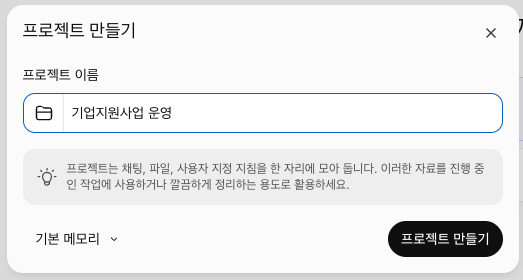
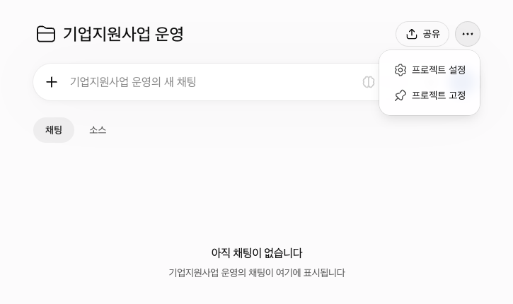
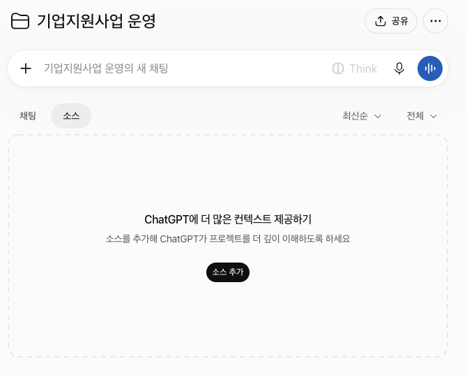
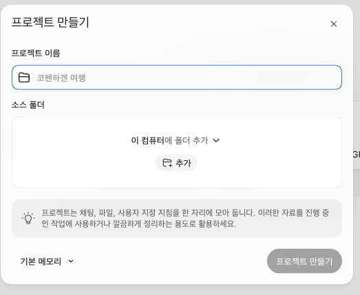
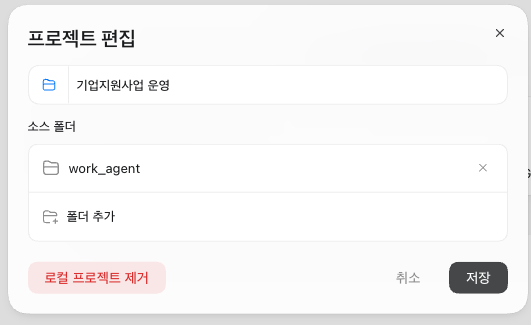
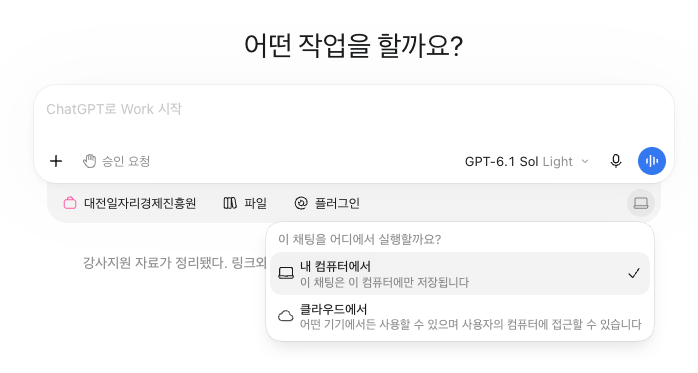
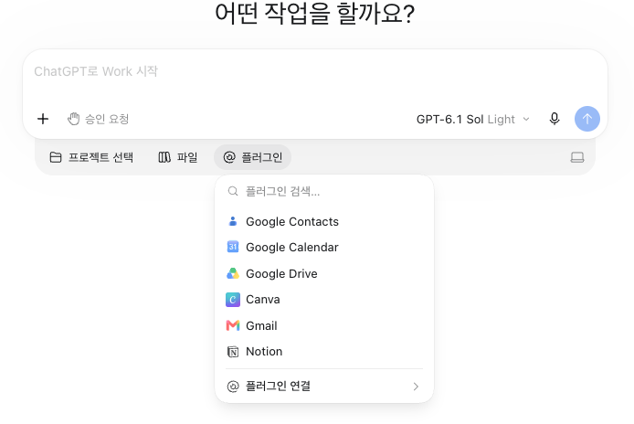
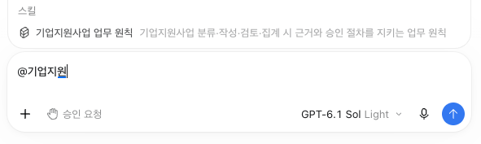
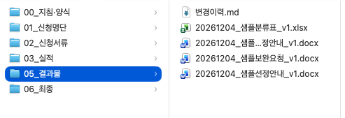

교육 목표
반복되는 사업 운영 업무를 AI로 처리하는 실무 감각을 기릅니다.
- 업무 유형별로 AI 활용 범위와 도구를 구분함
- 구조화된 실무 프롬프트(Prompt)를 직접 작성함
- 안내문·검토표·보고서를 AI로 완성함
사업 공고부터 안내문 작성, 신청서 검토, 실적 집계, 결과보고서까지. 하나의 가상 지원사업을 처음부터 끝까지 AI로 운영해 보는 4시간 실습형 교육입니다.
반복되는 사업 운영 업무를 AI로 처리하는 실무 감각을 기릅니다.
하나의 가상 지원사업을 운영하는 흐름으로 4개 교시가 이어집니다.
공공기관 업무 특성에 맞춰 안전하게 활용하는 습관을 함께 익힙니다.
1교시에서 AI 활용과 자동화의 기초를 익히고, 2~4교시에서 같은 가상 지원사업의 안내부터 결과 보고까지 실습합니다.
AI와 담당자 역할 분담, 실무 프롬프트 작성, 자동화 후보 도출, 기업지원사업 운영 프로젝트 설정
개인 실행 카드, 공통 기업지원사업 운영 프로젝트
사업 공고문, 참여자 명단 Excel
대상별 안내문, 이메일·문자 초안
신청서 PDF, 제출서류 목록
Excel 접수목록 · 신청 정보 정리표
증빙자료 PDF, 검토 기준표
누락·불일치 검토표, 보완 요청문
월별·사업별 실적 Excel
사업별 집계표, 성과 분석 차트
실적 데이터, 보고서 양식
월별·사업별 보고 요약 · 결과보고서 초안
이번 수업은 각자 사용하는 AI 도구로 참여하며, 무료 이용 범위를 기준으로 진행합니다. 강사 시연과 수업 설명은 GPT를 기준으로 진행합니다.
개인 보유 AI 계정으로 로그인해 주세요. GPT·Claude·Gemini 중 각자 사용할 도구 하나를 준비하면 됩니다.
수업에서 작성한 프롬프트와 AI 답변을 저장할 Word·메모장·Notion 중 익숙한 도구 하나를 열어 주세요.
Windows에서는 기본 메모장을 추천합니다. 시작 메뉴에서 ‘메모장’을 검색해 새 문서를 열고 ‘AI 실습 프롬프트.txt’로 저장해 두세요.
업무명, 사용한 프롬프트, 수정한 내용, 확인할 사항을 함께 기록하면 수업 후 다시 활용하기 좋습니다.
교육용 가상 데이터가 담긴 ZIP 파일을 내려받아 압축을 풀어 주세요. ‘기업지원사업_에이전트’ 폴더를 내 컴퓨터에 두고 1~4교시에서 이어서 사용합니다.
※ [예시 결과보기]는 교육용 응답 예시입니다. 실제 GPT 실행 결과는 입력 자료와 대화에 따라 달라질 수 있습니다.
 1교시공공기관 업무에 적용하는 생성형 AIAI와 담당자의 역할 분담실무 프롬프트 구조화자동화 후보 도출프로젝트로 업무 자동화
50분
1교시공공기관 업무에 적용하는 생성형 AIAI와 담당자의 역할 분담실무 프롬프트 구조화자동화 후보 도출프로젝트로 업무 자동화
50분
강점·한계와 신호등 기준으로 업무별 활용 수준을 판단
5요소 + 고도화 기법으로 바로 쓰는 결과 얻기
평가 기준·매트릭스로 우선순위 3개와 실행 카드 작성
지침·파일을 넣은 프로젝트로 하나의 업무 흐름을 실행하고, 에이전트 확장은 시연으로 확인
생성형 AI(Generative AI)의 중심에는 대규모 언어 모델(LLM, Large Language Model)이 있습니다. 방대한 문장을 학습한 뒤 “다음에 올 가능성이 높은 단어”를 이어 붙여 답을 만듭니다. 그래서 문장은 자연스럽지만, 그 내용이 사실인지는 스스로 보장하지 못합니다.
맞춤법·문장 다듬기, 문체 변환, 표 ↔ 문장 형식 바꾸기
확인: 의미가 바뀌지 않았는지만 보기요약, 분류, 안내문·보고서 초안, 체크리스트 작성
확인: 원본과 대조, 누락·오류 수정선정·탈락, 지원 금액, 규정·법령 해석, 외부 발송
AI는 근거 자료 정리까지만오늘 4개 교시는 아래 사업 운영 흐름을 그대로 따라갑니다. 단계마다 AI가 맡을 일, 담당자가 결정할 일, 반드시 확인할 검증 포인트를 나눠 두면 안전하게 속도를 높일 수 있습니다.
| 운영 단계 | AI가 맡을 일 | 담당자가 결정할 일 | 검증 포인트 |
|---|---|---|---|
| 사업 공고 | 이전 공고 기반 초안, 자격요건·일정 표 정리 | 지원 규모·자격 기준 확정 | 금액·일정·근거 규정 |
| 신청 접수 | 신청서 정보 추출, 접수 현황표 작성 | 접수 확정·중복 처리 | 접수 건수 원본 대조 |
| 서류 검토 | 제출서류 누락 1차 확인, 불일치 표시 | 적격 판정, 보완 요청 여부 | 표시된 항목 원본 확인 |
| 대상자 안내 | 선정·보완·탈락 안내문, 이메일·문자 초안 | 발송 승인·발송 | 대상자–문안 매칭, 날짜 |
| 실적·보고 | 집계, 달성률 계산, 차트, 보고서 초안 | 성과 해석, 결재 | 합계 검산, 수치 출처 |
같은 생성형 AI라도 업무 유형에 따라 무엇을 입력하고 어떻게 요청할지가 달라집니다.
| 업무 유형 | 사업 운영 예시 | 입력할 것 | 요청 방식 | 실습 교시 |
|---|---|---|---|---|
| 문서 작성 | 공고문 · 안내문 · 공문 · 문자 | 사업 정보, 이전 양식 | 맥락·형식 지정 → 초안 → 수정 요청 | 2교시 |
| 데이터 정리 | 엑셀 참여자 명단 | 가명 처리한 파일 | 분류 기준을 조건으로 명시 | 2교시 |
| 문서 검토 | 신청서 · 증빙자료 PDF | 문서 + 검토 기준표 | 기준별 충족 여부를 표로 | 3교시 |
| 분석 · 보고 | 사업별 실적 · 결과보고 | 실적 데이터, 보고서 양식 | 계산 → 차트 → 문장화 단계별 | 4교시 |
AI의 답이 아쉬운 이유는 대부분 정보가 부족해서입니다. 신입 직원에게 업무를 지시하듯 다섯 가지를 빠짐없이 알려 주세요.
누구의 입장에서 쓸지
“기업지원사업 담당자로서”
어떤 상황·배경인지
“1차 서류심사 선정 결과”
무엇을 해 달라는지
“선정 안내 문자 작성”
어떤 모양으로 받을지
“90자 단문 + 장문 1개”
지켜야 할 규칙
“공문체, 정보 지어내지 않기”
공고문 요약해
아래 붙여 넣은 '2026 청년 일자리 지원사업' 공고문을 요약해.
{공고문 붙여 넣기}
아래 붙여 넣은 '2026 청년 일자리 지원사업' 공고문을 지원대상 / 지원내용 / 신청기간 / 제출서류 / 문의처 5개 항목의 표로 요약해.
{공고문 붙여 넣기}
너는 일자리지원사업 담당자야.
아래 붙여 넣은 '2026 청년 일자리 지원사업' 공고문을 지원대상 / 지원내용 / 신청기간 / 제출서류 / 문의처 5개 항목의 표로 요약해.
공고문에 없는 내용은 '공고문 미기재'로 표시하고, 날짜·금액은 원문 표기 그대로 써.
마지막에 신청자가 자주 물을 질문 3개를 덧붙여줘.
{공고문 붙여 넣기}
✎ { }로 표시한 부분은 수정할 곳입니다. 채워진 샘플로 바로 실행하거나 내 업무에 맞게 바꿔 사용하세요.
[역할] 너는 대전 지역 공공기관의 창업지원사업 담당자야.
[맥락] 가상의 '2026 청년 창업 아카데미' 서류 심사에서 보완이 필요한 신청자에게 안내해야 해. 보완 서류는 사업자등록증명원(최근 1개월 이내 발급)이고, 마감은 12월 11일(금) 17시야.
[작업] 보완 요청 이메일을 작성해.
[형식] 제목 1줄 + 본문(인사 → 보완 사유 → 제출 방법 → 마감 → 문의처) + 서명 구성으로 작성해.
[조건] 정중하고 간결하게 300자 이내. 신청자 이름은 {성명}으로 남기고, 주어지지 않은 연락처는 [확인 필요]로 표시해.
활용 팁 같은 대화에서 “같은 내용으로 90자 문자도 만들어”라고 이어서 요청하면 이메일과 문자의 안내 내용이 일치합니다.
✎ { }로 표시한 부분은 수정할 곳입니다. 채워진 샘플로 바로 실행하거나 내 업무에 맞게 바꿔 사용하세요.
[역할] 너는 일자리지원사업 담당자야.
[맥락] 아래는 가상의 '2026 청년 일자리 지원사업' 공고문 전문이야.
{공고문 붙여 넣기}
[작업] 신청자가 한눈에 볼 수 있도록 핵심 내용을 요약해.
[형식] 지원대상 / 지원내용 / 신청기간 / 제출서류 / 문의처 5개 항목의 표로 정리하고, 신청자가 자주 물을 질문 3개를 덧붙여줘.
[조건] 공고문에 없는 내용은 추측하지 말고 '공고문 미기재'로 표시해. 날짜와 금액은 원문 표기를 그대로 써.
활용 팁 요약 결과의 날짜·금액은 원문과 1:1로 대조합니다. ‘공고문 미기재’ 항목은 공고문 보완이 필요한 지점일 수 있습니다.
✎ { }로 표시한 부분은 수정할 곳입니다. 채워진 샘플로 바로 실행하거나 내 업무에 맞게 바꿔 사용하세요.
[역할] 너는 기업지원사업 운영 담당자야. [맥락] 첨부한 엑셀은 가상의 참여기업 신청 명단이야. 열은 기업명, 업종, 소재지, 종업원 수, 서류 제출 여부, 평가 점수야. [작업] 아래 기준으로 '선정 / 보완 / 탈락'을 분류해. - 선정: 소재지 대전 + 서류 완비 + 평가 70점 이상 - 보완: 소재지 대전 + 서류 미비 + 평가 70점 이상 - 탈락: 그 외 [형식] '분류 결과' 열을 추가한 표와 분류별 건수 요약으로 정리해. [조건] 값이 비어 있거나 기준으로 판단할 수 없는 행은 '판단 보류'로 따로 모아. 이 결과는 담당자 검토용 초안이야.
활용 팁 기준을 숫자와 조건으로 명확히 쓸수록 정확해집니다. 분류별 건수의 합이 전체 행 수와 같은지 반드시 확인합니다.
✎ { }로 표시한 부분은 수정할 곳입니다. 채워진 샘플로 바로 실행하거나 내 업무에 맞게 바꿔 사용하세요.
[역할] 너는 일자리 지원사업 상담 담당자야.
[맥락] 아래는 사업 공고문 일부와 신청자의 문의야.
- 공고문: {신청 자격 조항 붙여 넣기}
- 문의: "주소지는 세종인데 대전 소재 기업에 재직 중이면 신청할 수 있나요?"
[작업] 문의에 대한 답변 초안을 작성해.
[형식] 결론 1문장 → 근거(공고문 해당 조항 인용) → 추가 안내 순서로 작성해.
[조건] 공고문에서 근거를 찾을 수 없으면 단정하지 말고 '담당 부서 확인 후 회신드리겠습니다'로 마무리해.
활용 팁 근거 조항을 인용하게 하면 AI가 지어낸 답인지 바로 확인할 수 있습니다. 반복 문의는 모아서 FAQ 초안으로 만들 수도 있습니다.
✎ { }로 표시한 부분은 수정할 곳입니다. 채워진 샘플로 바로 실행하거나 내 업무에 맞게 바꿔 사용하세요.
[역할] 너는 사업 운영 부서의 실무 담당자야.
[맥락] 아래는 가상의 '참여기업 간담회' 메모야.
{회의 메모 붙여 넣기}
[작업] 팀장 보고용 결과 요약을 작성해.
[형식] 개요(일시·장소·참석) / 주요 의견 3~5개 / 조치 필요 사항(담당·기한) / 향후 계획 순서로, 개조식 '~함' 체로 작성해.
[조건] 메모에 없는 내용은 추가하지 마. '결정된 사항'과 '논의만 된 사항'을 구분해 표시해.
활용 팁 결정과 논의를 구분하게 하면, 논의만 된 내용이 확정 사항처럼 보고되는 실수를 막을 수 있습니다.
✎ { }로 표시한 부분은 수정할 곳입니다. 채워진 샘플로 바로 실행하거나 내 업무에 맞게 바꿔 사용하세요.
[역할] 너는 기관 성과 관리 담당자야. [맥락] 아래는 가상의 3개 지원사업 상반기 실적이야. - 청년 일자리 매칭 | 목표 200명 | 실적 168명 - 소상공인 디지털 전환 | 목표 80개사 | 실적 86개사 - 예비창업 아카데미 | 목표 50명 | 실적 41명 [작업] 목표 대비 달성률을 계산하고 보고서용으로 정리해. [형식] ① 달성률 표(소수점 첫째 자리) ② 사업별 분석 1~2문장 ③ 종합 의견 3줄 ④ 막대 차트로 그릴 수 있는 데이터 순서로 정리해. [조건] 계산식을 함께 보여줘. 실적의 원인은 데이터에 없으므로 쓸 경우 '추정'이라고 표시해.
활용 팁 계산식을 보여 달라고 하면 검산이 쉬워집니다. 차트 요청은 4교시에서 자세히 다룹니다.
✎ { }로 표시한 부분은 수정할 곳입니다. 채워진 샘플로 바로 실행하거나 내 업무에 맞게 바꿔 사용하세요.
[역할] 너는 지원사업 서류 검토 담당자야.
[맥락] 아래는 모집 공고문의 '제출 서류' 항목이야.
{제출 서류 항목 붙여 넣기}
[작업] 신청서 검토용 체크리스트를 만들어.
[형식] 번호 | 서류명 | 필수/선택 | 확인 기준(발급일·서명·날인 등) | 확인 결과(빈칸) | 비고 열의 표로 만들어.
[조건] 공고문에 적힌 조건만 반영해. 해석이 필요한 항목은 비고에 '확인 필요'라고 적어.
활용 팁 이렇게 만든 체크리스트는 3교시 신청서 검토 실습의 ‘검토 기준표’로 그대로 이어집니다.
✎ { }로 표시한 부분은 수정할 곳입니다. 채워진 샘플로 바로 실행하거나 내 업무에 맞게 바꿔 사용하세요.
[역할] 너는 기관 홍보 담당자야.
[맥락] 아래는 사업 안내 공문 본문이야.
{공문 본문 붙여 넣기}
[작업] 같은 내용을 기관 SNS 게시 문구와 문자 메시지로 바꿔.
[형식] SNS는 제목 + 3줄 요약 + 해시태그 3개로, 문자는 90자 이내로 작성해.
[조건] 날짜·금액·신청 방법은 원문 그대로 유지하고, 과장된 표현은 쓰지 마.
활용 팁 형식 변환은 ‘초록 신호’ 업무입니다. 원문 정보가 그대로 유지됐는지만 빠르게 확인하면 됩니다.
5요소로 얻은 기본 결과에 아래 기법을 더해, 멀티턴(Multi-turn) 대화로 품질을 끌어올립니다.
원하는 결과물 샘플을 함께 주면 형식과 말투를 그대로 따라 합니다.
아래 [예시]와 같은 형식과 말투로 작성해.한 번에 다 시키지 말고 추출 → 확인 → 작성 순서로 진행합니다.
먼저 자격요건만 뽑아. 내가 확인하면 다음 단계로 가자.부족한 정보를 AI가 먼저 묻게 하면 추측으로 채우는 일이 줄어듭니다.
작성 전에 필요한 정보가 있으면 3개까지 먼저 질문해줘.결과 끝에 확인할 항목을 스스로 정리하게 해 검증 시간을 줄입니다.
마지막에 원문 확인이 필요한 날짜·수치를 목록으로 정리해줘.자주 쓰는 프롬프트의 바뀌는 부분을 { }로 만들어 두고 재사용합니다.
[맥락] {사업명}의 {단계} 결과를 {대상}에게 안내해야 해.생성형 AI에 입력한 내용은 기관 밖 서버로 전송될 수 있습니다. 입력하면 안 되는 정보와 바꿔서 입력하는 방법을 먼저 익혀 둡니다.
| 입력 금지 정보 | 예시 | 대체 방법 |
|---|---|---|
| 개인 식별 정보 | 성명, 주민등록번호, 연락처, 주소, 생년월일 | {참여자1}, 010-0000-0000, ‘대전’까지만 |
| 기업 식별·민감 정보 | 사업자등록번호, 상세 매출, 계좌번호 | {기업A}, ‘매출 10억 미만’처럼 구간화 |
| 내부 비공개 자료 | 결재 문서, 평가위원 의견, 예산 협의 내용 | 공개 가능한 수준으로 요약해 사용 |
| 인증 정보 | 내부 시스템 계정, 비밀번호 | 어떤 경우에도 입력하지 않음 |
홍길동 / 010-1234-5678 / 대전 유성구 ○○로 12 / (주)한빛테크 123-45-67890
{참여자1} / 연락처 삭제 / 대전 / {기업A} 사업자번호 삭제
생성형·고영향 AI 제품·서비스를 제공하는 AI 사업자는 이용자에게 AI 기반임을 미리 알리고, 생성물에 AI가 만들었다는 사실을 표시해야 합니다. 딥페이크처럼 실제와 구분하기 어려운 생성물은 이용자가 명확히 알 수 있게 표시합니다.
보건의료·채용·대출 심사·교통·공공서비스·교육 등 생명·안전·기본권에 큰 영향을 주는 영역의 AI는 위험 관리, 판단 기준 설명, 이용자 보호, 사람의 관리·감독, 관련 문서 보관 의무가 있습니다.
위반 시 시정명령과 최대 3,000만 원의 과태료를 부과할 수 있습니다. 시행 후 최소 1년 이상 계도기간 동안 사실조사와 과태료는 원칙적으로 유예됩니다(중대한 사안은 예외).
2026년 11월 기준 요약입니다. 시행령·고시·가이드라인 등 하위 규정이 계속 정비되고 있으므로, 정확한 조문과 최신 내용은 국가법령정보센터와 과학기술정보통신부 자료에서 확인합니다.
가상의 「2026 중소기업 디지털 전환 지원사업」 선정 기업에 보낼 안내 문자를 두 가지 방식으로 요청하고 결과를 비교합니다.
아래 프롬프트를 그대로 붙여 넣고 결과를 확인합니다.
✎ { }로 표시한 부분은 수정할 곳입니다. 채워진 샘플로 바로 실행하거나 내 업무에 맞게 바꿔 사용하세요.
기업지원사업 선정 안내 문자 써
선정 안내드립니다. 제출 기한과 제출 서류, 문의처를 알려 주시면 발송 검토용 문자를 작성하겠습니다.
같은 대화창에서 아래 프롬프트를 이어서 붙여 넣습니다.
✎ { }로 표시한 부분은 수정할 곳입니다. 채워진 샘플로 바로 실행하거나 내 업무에 맞게 바꿔 사용하세요.
[역할] 너는 대전 지역 공공기관의 기업지원사업 담당자야.
[맥락] 가상의 '2026 중소기업 디지털 전환 지원사업' 1차 서류심사에서 선정된 기업에 결과를 안내해야 해. 협약 서류 제출 마감은 12월 18일(금) 18시이고, 이메일로 접수해.
[작업] 선정 기업 대표자에게 보낼 안내 문자를 작성해.
[형식] 90자 이내 단문 1개, 장문 1개. 장문은 ① 선정 사실 ② 제출 서류 ③ 마감일 ④ 문의처 순서로 써.
[조건] 공손한 공문체, 이모지 사용 금지. 기업명·담당자명은 {기업명} {담당자명}처럼 변수로 남기고, 주어지지 않은 정보는 지어내지 말고 [확인 필요]로 표시해.
[선정 안내] {기업명}은 1차 서류심사에 선정되었습니다. 협약 서류를 12월 18일(금) 18시까지 이메일로 제출 바랍니다.
[2026 중소기업 디지털 전환 지원사업 선정 안내]
{기업명} 대표님께 안내드립니다.
① 선정 사실
귀사는 「2026 중소기업 디지털 전환 지원사업」 1차 서류심사에 선정되었습니다.
② 제출 서류
[확인 필요]
제출 방법은 이메일 접수이며, 접수 이메일 주소는 [확인 필요]입니다.
③ 마감일
12월 18일(금) 18시까지 제출해 주시기 바랍니다.
④ 문의처
담당자 {담당자명}
연락처 [확인 필요]
위에서 받은 답변을 먼저 보관하세요. 같은 대화창을 유지한 채 아래 추가 프롬프트를 순서대로 하나씩 입력하고, 답변을 확인한 뒤 다음 기법을 적용합니다.
예시를 넣기 전후로 문장 순서와 어조를 비교합니다.
✎ { }로 표시한 부분은 수정할 곳입니다. 채워진 샘플로 바로 실행하거나 내 업무에 맞게 바꿔 사용하세요.
위에서 작성한 안내 문자를 아래 [예시]처럼 결과 → 해야 할 일 → 기한 순서로 다듬어 줘. 예시는 문장 구성과 말투에만 참고하고, 사실은 위에서 제공한 내용만 써. 단문은 90자 이내로 유지해.
[예시] 귀사의 1차 서류심사 결과를 안내드립니다. 협약 서류를 {제출기한}까지 이메일로 제출해 주시기 바랍니다.
귀사는 2026 중소기업 디지털 전환 지원사업 1차 서류심사에 선정되었습니다. 협약 서류를 12월 18일(금) 18시까지 이메일로 제출해 주시기 바랍니다.
[2026 중소기업 디지털 전환 지원사업 선정 안내]
{기업명} 대표님께 안내드립니다.
귀사는 「2026 중소기업 디지털 전환 지원사업」 1차 서류심사에 선정되었습니다.
이에 따라 협약 서류를 아래 기한까지 이메일로 제출해 주시기 바랍니다.
제출 서류: [확인 필요]
제출 방법: 이메일 접수
제출 이메일 주소: [확인 필요]
제출 기한: 2026년 12월 18일(금) 18시까지
문의처: [확인 필요]
담당자: {담당자명}
감사합니다.
AI가 근거를 정리한 뒤 멈추는지 확인하고, 확인을 마치면 “초안을 작성해 줘”라고 입력합니다.
✎ { }로 표시한 부분은 수정할 곳입니다. 채워진 샘플로 바로 실행하거나 내 업무에 맞게 바꿔 사용하세요.
안내 문자를 아직 쓰지 말고, 위에서 확인되는 선정 사실·제출 방법·마감일과 확인이 필요한 서류명·문의처를 먼저 표로 정리해 줘. 내가 확인했다고 답하면 그때 단문과 장문을 작성해 줘.
| 구분 | 항목 | 내용 | 확인 상태 |
|---|---|---|---|
| 선정 결과 | 사업명 | 2026 중소기업 디지털 전환 지원사업 | 확인 |
| 선정 결과 | 심사 결과 | 1차 서류심사 선정 | 확인 |
| 제출 방법 | 접수 방식 | 이메일 접수 | 확인 |
| 제출 방법 | 제출 서류명 | [확인 필요] | 미확인 |
| 제출 방법 | 이메일 주소 | [확인 필요] | 미확인 |
| 제출 기한 | 마감일 | 2026년 12월 18일(금) | 확인 |
| 제출 기한 | 마감 시간 | 18:00 | 확인 |
| 문의처 | 담당 기관 | [확인 필요] | 미확인 |
| 문의처 | 담당자 | {담당자명} | 변수 |
| 문의처 | 연락처 | [확인 필요] | 미확인 |
문장 순서: 선정 결과 → 해야 할 일 → 제출 기한
단문: 90자 이내 / 장문: 선정 사실·제출 서류·기한·문의처 포함
미확인 정보는 [확인 필요]로 표시합니다.
위 표의 내용이 맞는지 확인해 주세요.
이어서 입력할 답변 · 위 내용을 확인했습니다. 미확인 정보는 [확인 필요]로 유지합니다.
질문이 오면 안내문 양식에서 답을 찾아 입력합니다. 자료에서 확인되지 않으면 “확인 필요로 남겨 줘”라고 답합니다.
✎ { }로 표시한 부분은 수정할 곳입니다. 채워진 샘플로 바로 실행하거나 내 업무에 맞게 바꿔 사용하세요.
문자를 다시 작성하기 전에, 위에서 제공하지 않아 초안 작성에 필요한 정보를 최대 3개까지 먼저 질문해 줘. 이미 제공된 마감일과 접수 방법은 다시 묻지 말고, 내 답을 받을 때까지 작성을 기다려 줘.
1. 제출 서류명: 선정 기업이 제출해야 하는 협약 서류의 정확한 명칭과 목록은 무엇인가요?
2. 접수 이메일 주소: 협약 서류를 제출할 이메일 주소는 무엇인가요?
3. 문의처: 문자에 기재할 담당 기관명, 담당자명, 연락처는 무엇인가요?
이미 제공된 마감일과 접수 방법은 그대로 적용하겠습니다. 답변을 주시면 확인된 정보만 반영하겠습니다.
AI가 만든 확인 결과를 원본 자료와 직접 대조합니다.
✎ { }로 표시한 부분은 수정할 곳입니다. 채워진 샘플로 바로 실행하거나 내 업무에 맞게 바꿔 사용하세요.
지금까지 작성한 문자 초안을 점검해 줘. 90자 이내 여부, 선정 대상, 마감일, 접수 방법, 임의로 추가한 정보 여부를 확인하고, 항목별로 초안 값·근거·수정 필요 여부를 표로 보여 줘. 근거가 없는 곳은 [확인 필요]로 남겨 줘.
귀사는 2026 중소기업 디지털 전환 지원사업 1차 서류심사에 선정되었습니다. 협약 서류를 12월 18일(금) 18시까지 이메일로 제출해 주시기 바랍니다.
| 점검 항목 | 초안 값 | 근거 | 수정 필요 여부 |
|---|---|---|---|
| 90자 이내 | 공백·문장부호 포함 86자 | 단문 90자 이내 조건 | 불필요 |
| 선정 대상 | 1차 서류심사 선정 기업 | 위에서 제공한 대상 | 불필요 |
| 선정 사실 | 1차 서류심사 선정 | 제공한 심사 결과 | 불필요 |
| 마감일 | 12월 18일(금) 18시 | 제공한 기한 | 불필요 |
| 접수 방법 | 이메일 제출 | 제공한 접수 방법 | 불필요 |
| 임의 추가 정보 | 없음 | 제공 정보와 대조 | 불필요 |
| 점검 항목 | 초안 값 | 근거 | 수정 필요 여부 |
|---|---|---|---|
| 선정 대상 | {기업명} 대표님 | 선정 기업 대표자 | 불필요 |
| 선정 사실 | 1차 서류심사 선정 | 제공 정보 | 불필요 |
| 제출 서류 | [확인 필요] | 구체적 서류명 미제공 | 확인 필요 |
| 마감일 | 2026년 12월 18일(금) 18시 | 제공 정보 | 불필요 |
| 접수 방법 | 이메일 접수 | 제공 정보 | 불필요 |
| 접수 이메일 주소 | [확인 필요] | 주소 미제공 | 확인 필요 |
| 문의처 | [확인 필요] | 기관·연락처 미제공 | 확인 필요 |
| 담당자명 | {담당자명} | 변수 사용 조건 | 불필요 |
3. 최종 점검 결과
단문은 길이와 제공 사실에 부합합니다. 장문의 제출 서류·접수 주소·문의처는 확인이 필요합니다. 발송 전 담당자가 원본과 대조하고 확인 필요 항목을 완성합니다.
응답을 복사해 두고, 가상의 다른 사업 정보로 변수 2개 이상을 바꿔 같은 대화창에서 다시 실행합니다.
✎ { }로 표시한 부분은 수정할 곳입니다. 채워진 샘플로 바로 실행하거나 내 업무에 맞게 바꿔 사용하세요.
이 안내 문자 작성 요청을 다른 사업에서도 쓸 수 있는 복사용 프롬프트로 바꿔 줘. 역할·맥락·작업·형식·조건 5요소를 유지하고, 사업명·심사 단계·대상·제출 서류·기한·방법·문의처는 { } 변수로 남겨 줘. 입력하지 않은 변수는 추정하지 않고 [확인 필요]로 표시하도록 조건에 넣어 줘.
[역할]
너는 공공기관의 기업지원사업 담당자야. 선정 기업 또는 지원 대상자에게 공식적인 결과 안내 문자를 작성하는 업무를 수행해.
[맥락]
다음 지원사업의 심사 결과를 대상자에게 안내해야 해.
사업명: {사업명}
심사 단계: {심사 단계}
선정 대상: {대상}
제출 서류: {제출 서류}
제출 기한: {기한}
제출 방법: {방법}
문의처: {문의처}
[작업]
위 정보를 바탕으로 선정 대상자에게 발송할 안내 문자를 작성해.
문장은 다음 순서로 구성해.
결과: 사업명과 심사 단계, 선정 사실을 명확히 안내
해야 할 일: 제출 서류와 제출 방법 안내
기한: 제출 마감일과 시간 안내
장문에는 문의처도 포함해.
[형식]
다음 두 가지 버전으로 작성해.
① 단문 문자
공백과 문장부호를 포함하여 90자 이내
선정 결과 → 해야 할 일 → 기한 순서
핵심 정보만 간결하게 작성
② 장문 문자
선정 결과 → 제출 서류 및 방법 → 제출 기한 → 문의처 순서
대상자가 필요한 조치를 쉽게 이해할 수 있도록 작성
실제 문자 발송에 적합한 문단 구성
[조건]
공공기관에서 사용하는 공손하고 공식적인 공문체로 작성해.
이모지, 과장된 표현, 불필요한 인사말은 사용하지 마.
제공된 정보만 사용하고, 사실이나 세부사항을 임의로 추가하지 마.
입력되지 않았거나 확인되지 않은 변수는 추정하지 말고 반드시 [확인 필요]로 표시해.
사업명, 심사 단계, 선정 대상, 제출 서류, 기한, 방법, 문의처는 입력된 값을 그대로 반영해.
날짜, 요일, 시간, 이메일 주소, 연락처 등을 임의로 생성하지 마.
단문이 90자를 초과하면 핵심 정보를 유지하면서 문장을 축약해.
최종 출력 전에 글자 수와 제공 정보의 일치 여부를 점검해.
추가 정보가 필요하더라도 임의로 채우지 말고 [확인 필요]로 남겨 둬.
[출력]
단문 문자 (글자 수 표시)
장문 문자
확인 필요 정보 목록 (없는 경우 '없음'으로 표시)
각자 맡은 업무를 잘게 나누고, 4가지 기준으로 점수를 매겨 효과는 크고 시작하기 쉬운 업무를 고릅니다. 내 업무의 우선순위 3개와 1순위 실행 카드를 만들고, 아래 공통 예시와 비교합니다.
“사업 운영”처럼 크게 적으면 AI 활용 지점이 보이지 않습니다. 실제로 손이 가는 작업 단위로 5~8개를 적습니다.
각 업무를 1~3점으로 평가합니다. 위험도는 높을수록 감점되는 역점수입니다.
| 기준 | 질문 | 3점 | 1점 |
|---|---|---|---|
| 반복성 | 얼마나 자주 하나요? | 매주 이상 | 연 1~2회 |
| 규칙성 | 처리 기준이 명확한가요? | 양식·기준이 정해져 있음 | 매번 판단이 달라짐 |
| 디지털화 | 자료가 파일로 있나요? | 엑셀·한글·PDF | 종이·구두 |
| 위험도 (역점수) | 개인정보·의사결정이 얽혀 있나요? | 거의 없음 | 핵심적으로 포함 |
✎ { }로 표시한 부분은 수정할 곳입니다. 채워진 샘플로 바로 실행하거나 내 업무에 맞게 바꿔 사용하세요.
[역할] 너는 공공기관 업무 효율화 컨설턴트야.
[맥락] 나는 {기업지원팀}에서 {기업지원사업}을 운영해. 반복 업무는 아래와 같아.
- {신청 명단 정리} (주기: {접수 기간 중 매일})
- {제출서류 누락 확인} (주기: {접수 기간 중 매일})
- {보완 안내 문자 작성} (주기: {접수 기간 중 매주})
- {월별 실적 집계} (주기: {매월})
- {결과보고서 작성} (주기: {사업 종료 시})
[작업] 각 업무를 아래 4가지 기준으로 1~3점 평가하고 분류해.
- 반복성: 자주 할수록 높음
- 규칙성: 처리 기준이 명확할수록 높음
- 디지털화: 자료가 파일로 있을수록 높음
- 위험도(역점수): 개인정보·의사결정이 적을수록 높음
분류는 10~12점 'AI 자동화 가능', 7~9점 'AI 보조+사람 검토', 6점 이하 또는 위험도 1점은 '사람 전담'으로 처리해.
[형식] 업무 | 반복성 | 규칙성 | 디지털화 | 위험도 | 합계 | 분류 | AI 활용 방법 | 검증 포인트 열의 표로 정리해.
[조건] 점수마다 근거를 짧게 붙여줘. 정보가 부족해 판단하기 어려운 업무는 나에게 질문해줘.
각 항목 1~3점 · 괄호 안은 점수 부여 근거
| 업무 | 반복성 | 규칙성 | 디지털화 | 위험도 | 합계 | 분류 | AI 활용 방법 | 검증 포인트 |
|---|---|---|---|---|---|---|---|---|
| 신청 명단 정리 | 3 (매일) | 3 (정형 항목) | 3 (전자파일 가정) | 2 (개인정보 포함 가능) | 11 | AI 자동화 가능 | 명단 통합, 중복 탐지, 항목 표준화 | 중복·누락·개인정보 접근 |
| 제출서류 누락 확인 | 3 (매일) | 3 (필수서류 목록) | 3 (전자파일 가정) | 2 (기업정보 포함) | 11 | AI 자동화 가능 | 제출 목록 대조, 누락 항목 추출 | 파일 인식 오류, 필수서류 기준 |
| 보완 안내 문자 작성 | 2 (매주) | 3 (안내 양식) | 3 (전자명단 가정) | 2 (연락처 포함) | 10 | AI 자동화 가능 | 누락 항목별 문자 초안 생성 | 수신자·서류명·기한·발송 승인 |
| 월별 실적 집계 | 2 (매월) | 3 (집계 기준) | 3 (엑셀 가정) | 2 (실적정보 포함 가능) | 10 | AI 자동화 가능 | 월별 실적 자동 집계, 증감 분석 | 합계·중복·집계 기준 |
| 결과보고서 작성 | 1 (종료 시) | 2 (보고서 양식 가정) | 2 (자료 형식 혼합 가능) | 2 (성과 해석·검토 필요) | 7 | AI 보조+사람 검토 | 보고서 초안, 표·그래프·성과 요약 | 수치 정확성·성과 해석·최종 승인 |
위 점수는 확정값이 아닙니다. 특히 위험도는 개인정보의 실제 포함 여부와 AI 처리 환경에 따라 1점으로 낮아질 수 있으며, 이 경우 합계와 관계없이 ‘사람 전담’으로 재분류합니다.
여기서 ‘AI 자동화 가능’은 기술적으로 자동 처리할 여지가 있다는 의미이며, 개인정보 처리나 대외 문자 발송까지 사람의 승인 없이 진행해도 된다는 뜻은 아닙니다.
아래 세 가지를 확인하면 디지털화·규칙성·위험도 점수를 실제 업무 환경에 맞게 조정할 수 있습니다.
1. 업무 자료는 주로 어떤 형태인가요?
2. 개인정보는 어떤 환경에서 처리하나요?
3. 서류 검토·실적 집계 기준이 정해져 있나요?
답변을 같은 대화창에 입력해 평가표를 재산정합니다. 확인한 조건과 수정된 점수를 바탕으로 5개 업무의 실제 도입 우선순위를 정합니다.
점수가 높은 업무를 ‘효과(절감 시간·영향)’와 ‘난이도(준비·검증 부담)’로 다시 배치합니다. Quick Win 칸의 업무부터 시작합니다.
공통 예시에서는 가상 명단·선정기준·안내문 양식이 이미 있고, 바로 다음 교시에 활용할 수 있어 신청 명단 분류·안내문 초안을 1순위로 정합니다.
같은 대화에서 이어서 요청합니다. 완성한 카드에는 내 업무에 적용할 자료·결과물·검증 방법을 남깁니다. 수업에서는 아래 공통 실행 카드로 에이전트를 함께 만듭니다.
✎ { }로 표시한 부분은 수정할 곳입니다. 채워진 샘플로 바로 실행하거나 내 업무에 맞게 바꿔 사용하세요.
위에서 평가한 업무 중 효과는 크고 바로 시작하기 쉬운 업무 {3개}를 골라 우선순위를 매겨 줘.
내 업무 환경은 {기업지원팀 / 기업지원사업 / 전자파일 중심 / 가명 처리한 자료 사용}이야.
효과는 절감 시간과 반복 빈도, 난이도는 자료 준비와 검증 부담을 기준으로 비교해. 정보가 부족하면 먼저 질문하고, 소요 시간은 내가 제공하지 않았다면 ‘확인 필요’로 남겨 줘.
[형식 1 · 우선순위] 순위 | 업무 | 효과 | 난이도 | 선택 근거를 표로 정리해.
[형식 2 · 1순위 실행 카드]
- 업무명 / 현재 방식 / 소요 시간
- 입력 자료 → AI에게 요청할 일 → 결과물
- 바로 복사할 수 있는 프롬프트 (역할·맥락·작업·형식·조건)
- 담당자가 원본과 대조할 검증 항목
- 기대 효과와 확인 방법
[조건] 실제 발송·최종 선정 판단은 담당자가 맡도록 적어 줘.
기업지원팀의 기업지원사업 운영 업무 5개 중 반복 빈도가 높고, 자료 준비와 검증 부담이 상대적으로 적은 업무 3개를 선정했습니다.
전자파일 중심, 가명 처리 자료 사용 환경을 기준으로 합니다. 실제 소요 시간이 제공되지 않아 시간 절감 효과는 [확인 필요]로 표시했습니다.
| 순위 | 업무 | 효과 | 난이도 | 선택 근거 |
|---|---|---|---|---|
| 1 | 제출서류 누락 확인 | 높음 · 매일 반복, 절감 시간 [확인 필요] | 중간 | 11점. 필수서류 대조로 누락 후보 추출, 후속 보완 안내와 연계 |
| 2 | 신청 명단 정리 | 높음 · 매일 반복, 절감 시간 [확인 필요] | 낮음 | 11점. 전자파일 중복·누락값 확인과 항목 표준화 용이 |
| 3 | 보완 안내 문자 작성 | 중간 · 매주 반복, 절감 시간 [확인 필요] | 낮음 | 10점. 누락 목록과 표준 안내문으로 초안 생성 가능 |
제출서류 누락 확인은 명단 정리보다 검증 부담이 크지만, 매일 반복되고 후속 보완 안내까지 연결할 수 있어 1순위로 선정했습니다. 실제 절감 시간에 따라 순위가 달라질 수 있습니다.
| 항목 | 내용 |
|---|---|
| 현재 방식 | [확인 필요] · 수작업 여부 미제공 |
| 현재 소요 시간 | [확인 필요] |
| 업무 주기 | 접수 기간 중 매일 |
| AI 자동화 적합성 | 11/12점 |
| 입력 자료 | 필수서류 체크리스트 + 가명 신청 기업 명단 + 제출 파일 목록 |
| AI에게 요청할 일 | 기업별 필수서류 대조, 누락 후보 추출, 확인 필요 항목 구분 |
| 결과물 | 신청 기업별 제출서류 점검표 및 누락 후보 목록 |
[역할]
너는 공공기관 기업지원사업의 제출서류 검토를 지원하는 AI 업무 보조자야.
[맥락]
나는 {기업지원팀}에서 {기업지원사업}을 운영하고 있어. 신청 기업의 제출서류 누락 여부를 확인하려고 해.
- 사업명: {사업명}
- 필수서류 목록: {필수서류 목록}
- 신청 기업별 제출 자료: {제출 자료}
- 예외·면제 기준: {예외 기준}
자료는 전자파일 중심이며, 신청 기업 정보는 가명 처리되어 있어.
[작업]
1. 신청 기업별 필수서류 목록과 제출 자료를 대조해.
2. 각 서류의 제출 여부를 ‘확인 / 누락 후보 / 확인 필요’로 구분해.
3. 누락 후보가 있는 기업을 별도로 정리해.
4. 파일명이 불명확하거나 판단 근거가 부족한 항목은 ‘확인 필요’로 표시해.
5. 담당자가 원본과 대조해야 할 사항을 제시해.
[형식]
기업 가명 ID | 필수서류명 | 제출 여부 | 판단 근거 | 담당자 검증 항목
표 아래에 전체 검토 기업 수, 누락 후보가 있는 기업 수, 확인 필요 항목 수를 요약해.
[조건]
1. 제공된 자료만 사용하고, 확인되지 않은 정보는 [확인 필요]로 표시해.
2. 파일명만으로 실제 서류의 유효성을 확정하지 마.
3. 실제 파일 내용을 확인할 수 없다면 내용 검토를 완료했다고 표현하지 마.
4. 제출 여부와 법적 적격성 판단을 구분해.
5. 개인정보를 생성하거나 복원하지 마.
6. AI 점검 결과는 담당자가 원본과 대조하여 최종 확인하도록 해.
7. 실제 보완 안내 발송 및 최종 선정 판단은 담당자가 수행해.
| 기대 효과 | 확인 방법 | 소요 시간·성과 |
|---|---|---|
| 서류 검토 시간 단축 | 동일 신청 건수 기준 도입 전후 검토 시간 비교 | [확인 필요] |
| 누락 탐지 정확도 향상 | 담당자 확정 결과와 AI 누락 후보 목록 비교 | [확인 필요] |
| 검토 일관성 개선 | 동일 자료에 대한 검토 결과 불일치 건수 비교 | [확인 필요] |
| 보완 안내 준비 시간 감소 | 검증된 누락 목록으로 문자 초안 작성 시간 비교 | [확인 필요] |
AI는 누락 후보를 탐지하고 검토 자료를 작성합니다. 실제 보완 안내 발송과 최종 선정 판단은 담당자가 수행합니다. 소규모 가명 자료로 시범 검증한 뒤 실제 효과를 측정합니다.
위 응답은 누락 확인을 1순위로 고른 예시입니다. 수업 공통 프로젝트는 명단 정리·안내문·증빙 검토·실적 보고를 모두 다루는 기업지원사업 운영 프로젝트로 이어집니다.
내 1순위 업무와 ‘왜 Quick Win인지’를 한 문장으로 이야기합니다.
개인 실행 카드는 내 업무 적용용으로 보관합니다. 다음 단계에서는 공통 실행 카드를 바탕으로 전원이 기업지원사업 운영 에이전트를 함께 만듭니다.
도구와 관계없이 폴더 구조, 파일 규칙, 지침을 먼저 설계합니다. 이 설계를 ChatGPT와 Claude 어느 쪽에도 그대로 옮길 수 있습니다.
파일 이름과 버전을 관리하는 방식에 정해진 정답은 없습니다. 중요한 것은 “어떤 파일이 최종본인지 나와 동료가 바로 알 수 있는 나만의 규칙”을 정하고, 그 규칙을 에이전트 지침에 적어 두는 것입니다. 아래 네 가지를 스스로 정해 보세요.
작성일? 수정일? 시행일? 맨 앞에 둘지, 뒤에 둘지
v1·v2? rev1? 날짜만으로 구분?
_최종·_확정 같은 표기? 별도 폴더? 둘 다?
md 파일? 엑셀? 파일 안 수정 내역? 누가 기록?
예시기업지원사업 담당자가 정한 관리 규칙
YYYYMMDD를 맨 앞에 붙여, 이름순으로 정렬하면 날짜순이 되도록 했습니다.
고칠 때마다 v1 → v2 → v3로 새 파일을 만들어 이전 버전을 남겼습니다.
저장할 때마다 05_결과물/변경이력.md 표에 날짜·파일명·버전·바뀐 내용을 한 행씩 남기기로 했습니다. 마크다운(md)이라 메모장으로도 바로 읽힙니다.
검토·승인한 파일만 이름 끝에 _최종을 붙여 06_최종 폴더로 옮기고, 에이전트는 이 폴더에 저장하지 못하게 했습니다.
변경이력.md 예시 마크다운 표로 기록하고, 열면 아래처럼 보입니다.
| 날짜 | 파일명 | 버전 | 바뀐 내용 | 작성 |
|---|---|---|---|---|
| 2026-12-03 | 20261203_선정안내문_v1.docx | v1 | 선정기준.txt 기준으로 초안 작성 | 에이전트 |
| 2026-12-04 | 20261204_선정안내문_v2.docx | v2 | 협약 서류 마감일 수정 (공고문 근거) | 에이전트 |
| 2026-12-04 | 20261204_선정안내문_v3.docx | v3 | 문의처 추가, 문장 다듬기 | 에이전트 |
| 2026-12-04 | 20261204_선정안내문_v3_최종.docx | 최종 | 검토·승인 후 06_최종으로 이동 | 담당자 |
# 변경이력 — 선정안내문 | 날짜 | 파일명 | 버전 | 바뀐 내용 | 작성 | |---|---|---|---|---| | 2026-12-03 | 20261203_선정안내문_v1.docx | v1 | 선정기준.txt 기준으로 초안 작성 | 에이전트 | | 2026-12-04 | 20261204_선정안내문_v2.docx | v2 | 협약 서류 마감일 수정 (공고문 근거) | 에이전트 | | 2026-12-04 | 20261204_선정안내문_v3.docx | v3 | 문의처 추가, 문장 다듬기 | 에이전트 | | 2026-12-04 | 20261204_선정안내문_v3_최종.docx | 최종 | 검토·승인 후 06_최종으로 이동 | 담당자 |
실습 2의 공통 실행 카드를 바탕으로 수강생 모두 ChatGPT의 프로젝트(Projects)에 ‘기업지원사업 운영’ 프로젝트를 만듭니다. 같은 프로젝트에 공통 지침과 실습 파일을 넣어 2~4교시까지 이어 씁니다.
일반 채팅은 대화가 끝나면 조건을 다시 설명해야 합니다. 프로젝트(Projects)는 지침과 참고 파일을 한 번 넣어 두면 그 안의 모든 대화에 자동으로 적용되어, 같은 업무를 같은 기준으로 반복할 수 있습니다.
역할, 작업 원칙, 결과물 형식, 하지 말아야 할 일
공고문·선정기준·양식·가상 명단 등 근거 자료
계획 → 승인 → 파일 생성 → 내려받아 저장 → 사람의 검토
ChatGPT에 로그인하고 아래 순서대로 진행하세요. 만든 ‘기업지원사업 운영’ 프로젝트를 2~4교시에도 이어서 사용합니다.
왼쪽 메뉴의 프로젝트 오른쪽 + 버튼을 누르고 이름에 기업지원사업 운영을 입력한 뒤 생성합니다.



완료 확인 · 왼쪽 목록에 ‘기업지원사업 운영’이 보이고 해당 프로젝트가 열려 있으면 다음으로 이동합니다.
프로젝트 오른쪽 위 ⋯ → 프로젝트 설정(Project settings)을 열어 지침 입력란에 아래 내용을 복사해 붙여 넣고 저장합니다.


## 역할 너는 대전 지역 공공기관의 기업지원사업 운영을 돕는 AI 업무 보조자야. 이 프로젝트는 가상 명단 분류, 안내문 작성, 신청서·증빙 검토, 실적 집계·보고에 이어서 사용할 거야. ## 자료와 작업 범위 1. 이 프로젝트에 올린 교육용 가상 파일과 내가 제공한 정보만 근거로 사용해. 2. 제공되지 않은 정보는 추정하지 말고 [확인 필요]로 표시해. 3. 원본 자료의 값을 임의로 수정하지 말고, 불일치는 양쪽 값과 출처를 남겨. 4. 자료에 실제 개인정보가 포함되어 있다면 내게 알리고 가명 자료로 바꾼 뒤 진행해. 5. 날짜·금액·건수에는 근거 파일 이름을 함께 적어. 6. 실제 발송·제출·결재·최종 선정 판단은 내가 수행해. ## 결과물과 저장 7. 결과물은 내려받을 수 있는 XLSX·DOCX로 만들고, 파일 생성이 어려우면 표는 탭 구분 텍스트, 문서는 본문 텍스트로 보여 줘. 8. 파일 이름은 YYYYMMDD_업무명_v1.확장자로 제안하고, 수정할 때는 버전을 올려 줘. 9. 결과물은 내가 내려받아 05_결과물에 저장할 거야. 로컬 폴더에 직접 저장했다고 표현하지 마. 10. 결과마다 변경이력.md에 붙여 넣을 날짜·파일명·버전·바뀐 내용·작성 표 한 행을 함께 보여 줘. 11. 06_최종으로 옮길 파일은 내가 검토하고 확정할 거야. ## 진행과 검토 작업 전에 입력 자료·실행 순서·결과물·검증 기준을 먼저 보여 주고, 내가 승인하면 실행해. 결과 끝에는 담당자가 원본과 대조할 항목과 확인 필요 목록을 붙여 줘.
완료 확인 · 설정을 다시 열었을 때 붙여 넣은 지침이 남아 있는지 확인합니다.
프로젝트의 파일·소스 추가 버튼을 누르고, 키트의 압축을 풀어 둔 위치에서 기업지원사업_에이전트 폴더를 엽니다. 아래 폴더와 파일 이름을 순서대로 찾아 선택합니다.


기업지원사업_에이전트/ ├─ 00_지침·양식/ │ ├─ 공고문.docx │ ├─ 선정기준.txt │ └─ 안내문_양식.docx └─ 01_신청명단/ └─ 참여기업_명단.xlsx
먼저 00_지침·양식에서 세 파일을 선택해 올립니다. 다시 파일 추가를 눌러 기업지원사업_에이전트 → 01_신청명단 → 참여기업_명단.xlsx를 선택합니다. 위에는 이번 단계에서 사용할 파일 4개만 표시했습니다.
완료 확인 · 파일 목록에 4개 파일이 있는지 확인하고, 업로드 한도에 걸리면 필요한 문서 내용만 대화에 복사해 사용합니다.
아래 실습 수칙을 확인하고, 이어지는 업무 지시 브리프(프롬프트)를 같은 프로젝트의 입력창에 붙여 넣습니다. 작업 계획을 확인한 뒤 승인해 가상 명단 5건으로 시험합니다.
프로젝트에 올린 파일은 서비스 서버에 저장됩니다. 첫 업무를 맡기기 전에 아래 4가지 수칙을 먼저 확인합니다.
프로젝트 안의 같은 대화창에서 아래 순서대로 진행합니다. 분류표를 먼저 확인한 뒤 안내문 작성을 요청합니다.
✎ { }로 표시한 부분은 수정할 곳입니다. 채워진 샘플로 바로 실행하거나 내 업무에 맞게 바꿔 사용하세요.
[자료] 이 프로젝트에 올린 참여기업_명단.xlsx와 선정기준.txt를 읽어.
[대상] 접수번호 {2026-DX-001, 2026-DX-004, 2026-DX-010, 2026-DX-011, 2026-DX-063} 5건을 분류해.
[판정] 판단에 필요한 값이 빈칸·확인 중이면 판단 보류로 기록하고, 나머지는 선정기준.txt에 따라 선정·보완·탈락으로 분류해.
[결과] 접수번호·기업명·분류·판단 근거·보완서류·확인 항목을 표로 보여 줘. 네 분류의 합계가 5건인지 검산하고 20261204_샘플분류표_v1.xlsx를 만들어. 파일 생성이 어려우면 Excel에 붙여 넣을 탭 구분 텍스트로 줘.
[진행] 먼저 입력 자료와 계획을 보여 주고, 내가 승인하면 분류표까지만 작성한 뒤 내 검토를 기다려. 파일명과 변경이력 행도 함께 보여 줘.요청하신 자료 2종을 확인했습니다. 대상 5건의 원본 데이터도 확인했으며, 아직 선정·보완·탈락·판단 보류 분류는 실행하지 않았습니다.
| 구분 | 파일명 | 확인 내용 |
|---|---|---|
| 기업 명단 | 참여기업_명단.xlsx | 신청명단 시트, 101개 행, 14개 열 |
| 선정 기준 | 선정기준.txt | 자격요건 4개, 필수서류 3종, 분류 기준 |
개인정보 확인 · 명단의 기업명·대표자·연락처·이메일은 교육용 가상(가명) 데이터라고 명시되어 있습니다. 연락처도 비식별 처리되어 있어 해당 자료를 그대로 사용해도 됩니다.
| 분류 | 판정 기준 |
|---|---|
| 선정 | 자격요건 4개 충족 + 필수서류 3종 제출 + 70점 이상 |
| 보완 | 자격요건 4개 충족 + 70점 이상 + 필수서류 1종 이상 미제출 |
| 탈락 | 자격요건 1개 이상 미충족 또는 70점 미만 |
| 판단 보류 | 판단에 필요한 값이 빈칸 또는 확인 중 |
출처: 선정기준.txt
아래는 원본 명단에서 추출한 값이며 아직 판정하지 않은 상태입니다.
| 접수번호 | 기업명 | 소재지 | 업력 | 근로자 | 체납 | 서류평가 |
|---|---|---|---|---|---|---|
| 001 | (주)이음테크 | 대전 서구 | 1년 | 8명 | 있음 | 66 |
| 004 | (주)늘봄솔루션 | 대전 중구 | 12년 | 18명 | 없음 | 84 |
| 010 | (주)라온물산 | 대전 중구 | 2년 | 88명 | 없음 | 75 |
| 011 | (주)미르네트웍스 | 대전 서구 | 2년 | 35명 | 확인 중 | 76 |
| 063 | (주)가람랩스 | 대전 유성구 | 1년 | 70명 | 없음 | 빈칸 |
출처: 참여기업_명단.xlsx의 신청명단 시트
1. 원본 데이터 확인
대상 5건의 자격요건, 제출서류, 점수를 선정기준과 대조합니다.
2. 분류표 작성
선정·보완·탈락·판단 보류 중 하나로 분류하고 판단 근거를 기록합니다.
3. 보완 및 확인 항목 기록
미제출 서류와 담당자가 직접 확인해야 할 사항을 구분합니다.
4. 합계 검산
네 가지 분류의 합계가 5건인지 확인합니다.
5. 엑셀 파일 생성
지정된 파일명으로 XLSX를 만들고 변경이력 행을 제공합니다.
예정 결과물 · 20261204_샘플분류표_v1.xlsx
엑셀 분류표 · 5건 · 승인 후 작성
분류표 열 구성 · 접수번호 / 기업명 / 분류 / 판단 근거 / 보완서류 / 확인 항목
추가 유의사항
선정기준은 ‘본사 소재지’를 요구하지만 명단의 열 이름은 ‘소재지’입니다. 두 항목이 동일한 의미인지 명단만으로 확정할 수 없으므로 해당 부분은 확인 필요 사항으로 남기겠습니다.
요청하신 파일명 날짜 20261204는 현재 작업일인 2026-11-18보다 미래 날짜입니다. 파일명은 요청하신 그대로 사용하고 변경이력에는 실제 작성일을 기록하겠습니다.
작업 대기
위 입력 자료와 실행 계획대로 분류표 작성까지만 진행할까요?
실행 승인 후 XLSX와 변경이력 행을 제공하고, 담당자 검토 전까지 안내문 작성이나 최종 선정 판단은 진행하지 않겠습니다.
다음으로 넘어가기 전 · 계획을 확인해 승인하고, 생성된 분류표의 접수번호·원본 값·분류 근거를 직접 대조하세요.
✎ { }로 표시한 부분은 수정할 곳입니다. 채워진 샘플로 바로 실행하거나 내 업무에 맞게 바꿔 사용하세요.
[입력] 위에서 작성한 분류표를 내가 검토했어. 이 분류표와 프로젝트의 안내문_양식.docx를 사용해. [대상] 선정 2026-DX-004, 보완 2026-DX-010, 미선정 2026-DX-001의 안내문을 각각 작성해. 판단 보류 2건은 제외해. [작성] 기업명·대표자명은 원본 명단과 접수번호로 연결해. 기한·제출 방법·문의처는 양식과 대조하고, 확인되지 않은 정보는 [확인 필요]로 남겨. 미선정 사유는 담당자 검토용으로 표시해. [결과] 20261204_샘플선정안내_v1.docx, 20261204_샘플보완요청_v1.docx, 20261204_샘플미선정안내_v1.docx를 만들어. 파일 생성이 어려우면 유형별로 복사할 수 있는 본문을 줘. [검토 자료] 대상 접수번호·안내 유형·제출 기한·확인 필요 항목과 변경이력 행을 함께 보여 줘. 실제 발송과 최종 판단은 내가 할게.
요청하신 안내문 3종의 작성에 필요한 원본 자료를 확인했습니다. 기업명과 대표자명은 접수번호를 기준으로 원본 명단과 연결했습니다.
이번 작업은 담당자 검토용 안내문 초안 작성으로 진행하겠습니다.
| 입력 자료 | 사용 목적 |
|---|---|
| 앞서 검토한 분류표 | 안내 유형 및 분류 근거 |
| 참여기업_명단.xlsx | 기업명·대표자명·접수번호 |
| 안내문_양식.docx | 제목·문체·본문·기한·문의처 |
원본 명단은 교육용 가상 데이터로 확인했습니다.
| 접수번호 | 기업명 | 대표자명 | 안내 유형 |
|---|---|---|---|
| 2026-DX-004 | (주)늘봄솔루션 | 대표004 | 선정 안내 |
| 2026-DX-010 | (주)라온물산 | 대표010 | 보완 요청 |
| 2026-DX-001 | (주)이음테크 | 대표001 | 미선정 안내 |
① 선정 안내 · 2026-DX-004
예정 파일명: 20261204_샘플선정안내_v1.docx
② 보완 요청 · 2026-DX-010
예정 파일명: 20261204_샘플보완요청_v1.docx
③ 미선정 안내 · 2026-DX-001
예정 파일명: 20261204_샘플미선정안내_v1.docx
| 대상 | 제출 기한 | 확인 필요 항목 |
|---|---|---|
| 004 선정 | 12월 18일 18시 | 협약서 등 제출 서류의 최종 안내 여부 |
| 010 보완 | 12월 11일 18시 | 이메일 제출 주소 |
| 001 미선정 | 해당 없음 | 미선정 사유 담당자 최종 검토·승인 |
자료 간 대조 결과
예정 결과물 3개
변경이력.md 기록용 · 승인 후 파일 작성 시 기록할 예정 행
| 날짜 | 파일명 | 버전 | 바뀐 내용 | 작성 |
|---|---|---|---|---|
| 2026-11-18 | 20261204_샘플선정안내_v1.docx | v1 | 004 선정 안내 초안 작성 | AI 초안 |
| 2026-11-18 | 20261204_샘플보완요청_v1.docx | v1 | 010 재무제표 보완 요청 초안 작성 | AI 초안 |
| 2026-11-18 | 20261204_샘플미선정안내_v1.docx | v1 | 001 미선정 사유 검토용 초안 작성 | AI 초안 |
작성 전 승인 대기
위 계획대로 안내문 3개 DOCX를 작성해도 될까요?
승인해 주시면 다음 원칙으로 작성하겠습니다.
실제 발송이나 최종 선정 판단은 진행하지 않겠습니다.
승인에 따라 안내문 3종을 작성합니다.
원본 명단과 안내문 양식을 다시 대조했습니다. 특히 다음 사항을 반영합니다.
보완 안내문에는 양식에 구체적인 이메일 주소가 없으므로 [확인 필요]를 표시합니다. 미선정 안내문은 내부 검토용으로 구분합니다.
아래 예시 파일은 agent → 05_결과물에 있습니다. 파일명을 눌러 내려받아 내용을 확인하세요.
| 안내문 | 대상 | 파일명 | 응답 상태 예시 |
|---|---|---|---|
| 선정 안내문 | 2026-DX-004 · (주)늘봄솔루션 | 20261204_샘플선정안내_v1.docx ↓ | 예시 파일 다운로드 |
| 보완 요청 안내문 | 2026-DX-010 · (주)라온물산 | 20261204_샘플보완요청_v1.docx ↓ | 예시 파일 다운로드 |
| 미선정 안내문 | 2026-DX-001 · (주)이음테크 | 20261204_샘플미선정안내_v1.docx ↓ | 예시 파일 다운로드 |
| 접수번호 | 안내 유형 | 제출 기한 | 확인 필요 항목 |
|---|---|---|---|
| 004 | 선정 | 12.18. 18:00 | 협약서류 최종 안내 내용 |
| 010 | 보완 | 12.11. 18:00 | 이메일 제출 주소 |
| 001 | 미선정 | 해당 없음 | 미선정 사유 및 최종 판단 승인 |
기한과 제출서류 근거는 안내문_양식.docx입니다.
| 날짜 | 파일명 | 버전 | 바뀐 내용 | 작성 |
|---|---|---|---|---|
| 2026-11-18 | 20261204_샘플선정안내_v1.docx | v1 | 004 선정 안내문 작성 | AI 초안 |
| 2026-11-18 | 20261204_샘플보완요청_v1.docx | v1 | 010 재무제표 보완 요청 작성 | AI 초안 |
| 2026-11-18 | 20261204_샘플미선정안내_v1.docx | v1 | 001 미선정 안내 및 검토 표시 | AI 초안 |
다운로드한 파일이 열리는지와 실제 저장 위치를 담당자가 확인합니다.
확인 필요 목록
안내문 3종 작성은 완료했습니다. 실제 발송이나 최종 선정 판단은 수행하지 않았습니다.
파일을 내려받아 실습 폴더의 05_결과물에 저장하신 뒤 검토해 주세요. 06_최종 이동 및 확정은 담당자 검토 후 진행하시면 됩니다.
완료 확인 · 요청한 파일과 시험 대상, 작업 계획을 대조한 뒤 실행하고 결과물을 확인합니다.
생성된 파일을 내려받아 05_결과물에 저장합니다. 파일을 만들 수 없으면 표는 Excel, 문안은 Word·메모장 등에 붙여 넣어 저장합니다. 함께 제시된 변경이력 행을 기록하고, 건수·기한·문안을 원본과 대조합니다.

완료 확인 · 저장한 파일을 직접 열어 보고, 2교시에서도 왼쪽 메뉴의 같은 프로젝트로 돌아옵니다.
3장에서 만든 프로젝트에 로컬 폴더 권한을 더하면 에이전트가 됩니다. 사용할 수 있는 플랜·기관 정책·데스크톱 앱 환경이 필요해 오늘은 강사 시연으로 진행합니다.
프로젝트(채팅)는 올린 파일로 답과 파일을 만들어 주고, 사람이 내려받아 저장합니다. 에이전트(AI Agent)는 목표를 받으면 스스로 계획을 세우고, 내 폴더의 파일을 읽고, 결과물 파일을 만들어 저장합니다. 사람은 계획을 승인하고 결과를 검토합니다.
| 구분 | 에이전트 (Work · Cowork) | 프로젝트 (채팅) |
|---|---|---|
| 자료 읽기 | 연결한 폴더의 파일을 직접 읽음 | 프로젝트에 올린 파일만 읽음 |
| 결과 저장 | 05_결과물 폴더에 자동 저장 | 채팅에 만든 파일을 내려받아 05_결과물에 직접 저장 |
| 파일 이름 · 이력 | 지침대로 이름 붙이고 변경이력.md 자동 기록 | AI가 제안한 이름으로 바꿔 저장하고, 이력 행은 복사해 붙여 넣음 |
| 지침 적용 | Cowork는 프로젝트 지침, ChatGPT Work는 작업 지시·Skills로 적용 | 같음 — 프로젝트 지침이 모든 대화에 적용 |
역할, 작업 원칙, 결과물 형식, 하지 말아야 할 일 — 프로젝트 지침, 작업 지시, Skills로 전달
공고문·양식·기준표 등 참고 파일과 링크, 프로젝트 메모리
읽고 쓸 수 있는 내 컴퓨터의 폴더 — 필요한 폴더만 연결
계획 → 승인 → 실행 → 결과 저장 → 사람의 검토
3장 공통 지침의 원칙은 그대로 쓰되, ChatGPT Work는 작업 지시·Skills로, Claude Cowork는 프로젝트 지침으로 넣습니다. 폴더 연결과 실행 방식만 달라집니다. 에이전트용 폴더는 실습 폴더(기업지원사업_에이전트)를 통째로 복사해 이름을 work_agent로 바꿔 씁니다. 3장 프로젝트 결과물과 섞이지 않게 에이전트 작업은 이 폴더 안에서만 진행합니다.
왼쪽 메뉴 프로젝트 오른쪽 +를 눌러 이름을 ‘기업지원사업 운영’으로 정하고, 소스 폴더의 추가로 내 컴퓨터의 ‘work_agent’ 폴더를 선택한 뒤 만듭니다. 이미 만든 프로젝트라면 프로젝트 편집의 소스 폴더에서 폴더 추가로 연결합니다.


프로젝트 화면 위쪽 Chat / Work 스위치에서 Work를 선택합니다. 입력창이 ‘ChatGPT로 Work 시작’으로 바뀌고 아래에 프로젝트 이름이 보이면 됩니다.

입력창 아래 오른쪽 노트북 아이콘을 눌러 내 컴퓨터에서를 선택합니다. 연결한 work_agent 폴더의 파일을 읽고 저장하려면 반드시 내 컴퓨터에서 실행해야 합니다. 클라우드에서를 고르면 어느 기기에서든 이어 쓸 수 있지만 내 컴퓨터의 폴더에는 접근하지 못합니다.

입력창 아래 플러그인을 눌러 업무에 필요한 앱(Google Drive, Gmail, Notion 등)을 연결합니다. 오늘 시연은 work_agent 폴더의 파일만 쓰므로 연결하지 않아도 됩니다.

Work에는 별도의 지침 입력란이 없으므로, 지켜야 할 원칙을 스킬(Skills)로 한 번 저장해 두고 작업마다 불러 씁니다. Work 입력창에 아래 요청문을 붙여 넣으면 ChatGPT가 스킬을 만들고 설치합니다. 완료 메시지의 스킬 내용 보기로 SKILL.md를 열어 내용을 확인합니다.
아래 내용으로 '기업지원사업 업무 원칙' 스킬을 만들어줘. [설명] 기업지원사업 명단 분류, 안내문 작성, 신청서·증빙 검토, 실적 집계·보고 작업을 할 때 사용해. ## 역할 너는 대전 지역 공공기관의 기업지원사업 운영을 돕는 업무 에이전트야. ## 작업 원칙 1. 연결한 폴더의 파일만 근거로 쓰고, 없는 정보는 추측하지 말고 [확인 필요]로 표시해. 2. 원본 파일은 수정·삭제하지 말고, 결과물은 05_결과물에 새 파일로 저장해. 3. 날짜·금액·건수에는 근거 파일 이름을 함께 적어. 4. 실제 개인정보가 보이면 작업을 멈추고 나에게 알려줘. ## 결과물 형식 - 파일 이름은 YYYYMMDD_업무명_v1.확장자로 하고, 고칠 때는 버전을 올려. - 저장할 때마다 05_결과물/변경이력.md에 날짜·파일명·버전·바뀐 내용을 한 행씩 추가해. - 결과 끝에는 담당자가 원본과 대조할 '확인 필요' 목록을 붙여줘. ## 하지 말 것 - 발송·제출·결재·최종 선정 판단은 하지 마. - 06_최종 폴더에는 아무것도 저장하지 마. ## 진행 방식 작업 전에 계획을 먼저 보여 주고, 내가 승인하면 실행해.


※ 스킬 사용 가능 여부는 플랜·워크스페이스 설정에 따라 다릅니다. 데스크톱 앱과 웹의 개인 스킬은 자동 동기화되지 않으니 시연에 쓰는 데스크톱 앱에서 만듭니다.
새 작업을 열고 입력창에 @를 입력해 기업지원사업 업무 원칙 스킬을 고른 뒤, 4-3의 시연 브리프를 붙여 넣습니다. Work가 보여 주는 계획을 확인하고 승인합니다. 스킬에 원칙이 들어 있으므로 브리프의 [원칙]·[기록] 줄은 제외하고 프롬프트 넣으면 됩니다.
Claude 데스크톱 앱을 설치하고 로그인한 뒤 Cowork를 엽니다.
왼쪽 Projects에서 +를 누르고 Use an existing folder로 ‘work_agent’ 폴더를 고릅니다. (빈 폴더로 시작하려면 Start from scratch)
이름은 ‘기업지원사업 운영 에이전트’로 정하고, 설명에는 “참여기업 명단 분류·안내문 초안·증빙 검토·실적 집계와 보고서 작성”이라고 적습니다. 설명은 백그라운드 작업(Dispatch)이 프로젝트를 고를 때 참고합니다.
Instructions에 3-3의 ② 공통 지침을 붙여 넣습니다. 프로젝트 안의 모든 세션에 적용됩니다.
Folders에 필요한 폴더를 더하고, Links에 공고 페이지 URL을 넣습니다. claude.ai에서 만든 프로젝트가 있다면 Projects from Chat으로 연결해 그 지식을 함께 쓸 수 있습니다.
사이드바에서 프로젝트를 선택해 새 세션을 열고, 안전 수칙을 확인한 뒤 4-3의 시연 브리프를 입력합니다. 계획을 확인한 뒤 진행을 승인합니다.
만든 파일은 프로젝트 폴더에 저장되고, 세션에서 배운 내용은 프로젝트 메모리에 남아 다음 세션에 이어집니다.
자주 쓰는 업무 절차는 Skills로 저장해 재사용하고, 매주 반복되는 정리 작업은 Dispatch나 예약 작업으로 백그라운드에서 실행하도록 넓혀 갈 수 있습니다.
| 구분 | ChatGPT 프로젝트 + Work | Claude 프로젝트 + Cowork |
|---|---|---|
| 실행 위치 | Work 모드(웹·모바일·데스크톱), 로컬 폴더는 데스크톱 앱 | 데스크톱 앱 Cowork |
| 지침 | 로컬 프로젝트에는 지침 입력란이 없어 작업 지시에 원칙 포함 | 프로젝트 지침(Instructions) |
| 스킬(Skills) | 원칙·형식을 Skills로 저장하고 입력창에서 @로 불러 사용 | 반복 업무 절차를 Skills로 저장해 재사용, 플러그인으로 묶어 설치 가능 |
| 컨텍스트 | 프로젝트 파일, 대화 맥락, 메모리 | 폴더, Links, Projects from Chat, 프로젝트 메모리 |
| 로컬 폴더 | 프로젝트 만들기·편집의 소스 폴더에서 추가(데스크톱 앱) | 프로젝트 생성 시 폴더 연결, 여러 폴더 추가 |
| 통제 방법 | 계획 확인, 승인 요청, 관리자 작업 제한 | 계획 확인, 삭제 전 확인, 폴더 범위 제한 |
| 반복 실행 | 예약 작업(Scheduled)으로 정해진 시간에 실행 | 예약 작업, Dispatch(휴대폰에서 지시 → 내 컴퓨터에서 실행) |
두 도구 모두 기능과 화면 이름이 자주 바뀝니다. 교육 당일 화면과 다를 수 있으며, 기관에서 허용한 도구와 계정으로만 실습합니다.
3장에서 프로젝트로 한 업무(접수번호 5건 분류 → 선정·보완·미선정 안내문 3종)를 에이전트에게 그대로 맡깁니다. 차이는 에이전트가 폴더의 파일을 직접 읽고, 결과물을 05_결과물에 직접 저장한다는 점입니다. 시연 전에 work_agent 폴더만 연결했는지, 원본 사본을 백업했는지 확인합니다.
✎ { }로 표시한 부분은 수정할 곳입니다. 채워진 샘플로 바로 실행하거나 내 업무에 맞게 바꿔 사용하세요.
[자료] 연결한 work_agent 폴더의 01_신청명단/참여기업_명단.xlsx, 00_지침·양식/선정기준.txt, 00_지침·양식/안내문_양식.docx 파일을 직접 읽어.
[대상] 접수번호 {2026-DX-001, 2026-DX-004, 2026-DX-010, 2026-DX-011, 2026-DX-063} 5건을 분류해. 판단에 필요한 값이 빈칸·확인 중이면 판단 보류로 기록하고, 나머지는 선정기준.txt에 따라 선정·보완·탈락으로 분류해.
[분류표] 접수번호·기업명·분류·판단 근거·보완서류·확인 항목을 담아 05_결과물/20261204_샘플분류표_v1.xlsx로 저장해. 네 분류의 합계가 5건인지 검산해.
[안내문] 분류 결과에 따라 선정·보완·미선정 대상 1건씩 안내문을 양식대로 작성해 05_결과물에 20261204_샘플선정안내_v1.docx, 20261204_샘플보완요청_v1.docx, 20261204_샘플미선정안내_v1.docx로 저장해. 판단 보류는 제외하고, 확인되지 않은 정보는 [확인 필요]로 남겨.
[원칙] 연결한 폴더의 파일만 근거로 쓰고, 없는 정보는 추측하지 마. 실제 개인정보가 보이면 멈추고 알려줘. 발송·제출·결재는 하지 마.
[기록] 저장할 때마다 05_결과물/변경이력.md에 날짜·파일명·버전·바뀐 내용을 한 행씩 추가해. 원본 파일과 06_최종 폴더는 건드리지 마.
[진행] 실행 전에 단계별 계획을 먼저 보여 주고, 내가 승인하면 시작해. 끝나면 저장한 파일 목록과 확인 필요 항목을 알려줘.
기업지원사업 업무 원칙 스킬을 적용해 다음 순서로 진행하겠습니다. 승인 전에는 자료를 읽거나 결과물을 저장하지 않겠습니다.
[확인 필요]로 표시합니다. 해당 분류에 대상이 없으면 임의로 만들지 않고 알려드리겠습니다.05_결과물에 요청하신 20261204_…_v1 파일명으로 저장합니다. 같은 파일명이 있으면 버전을 올립니다. 저장할 때마다 변경이력에 실제 저장일·파일명·버전·변경 내용을 기록하고, 완료 후 파일 목록과 확인 필요 항목을 알려드리겠습니다.원본과 06_최종 폴더는 변경하지 않으며, 발송·제출·결재는 하지 않습니다.
이 계획으로 진행해도 될까요?
2차 개인정보 체크 · GPT 질문
참여기업_명단.xlsx에서 개인 휴대전화번호 형식과 이메일 주소가 발견되어 작업을 즉시 중단했습니다. 실제 개인정보인지 확인이 필요하며, 발견한 값은 재현하지 않았습니다.
06_최종 폴더는 변경하지 않았습니다.해당 항목을 삭제하거나 마스킹한 비식별 명단으로 교체한 뒤 알려주세요.
나의 답변
개인정보 아니고, 모두 더미 데이터야. 그래도 진행해도 괜찮아.
GPT 응답 · 작업 완료
저장 완료했습니다. 선정 1건·보완 1건·탈락 1건·판단 보류 2건으로 합계 5건이 일치합니다.work_agent/05_결과물/변경이력.md에 저장일과 변경 내용 4행을 기록했습니다.
확인 필요 사항은 다음과 같습니다.
원본과 06_최종은 변경하지 않았으며, 발송·제출·결재는 하지 않았습니다.

AI는 초안·분류·요약·변환을, 사람은 판단·검증·승인·발송을 맡습니다. 기준은 “누가 책임지는가”입니다.
좋은 결과는 역할·맥락·작업·형식·조건 5요소에서 나오고, 예시·단계·역질문·자기 점검·템플릿으로 더 좋아집니다.
입력 전에는 개인정보·비공개 여부를, 사용 전에는 원본 대조를 확인합니다.
자동화 후보는 반복성·규칙성·디지털화·위험도로 평가하고, Quick Win부터 시작합니다.
에이전트는 지침·컨텍스트·폴더 권한·업무 흐름 4가지로 만들고, 계획 승인과 결과 검토는 사람이 합니다.
 2교시사업 참여자 안내문 및 행정문서 작성Excel 참여자 명단 분류선정 통보·협약 안내 초안이메일·문자 일괄 초안공문·안내자료
50분
2교시사업 참여자 안내문 및 행정문서 작성Excel 참여자 명단 분류선정 통보·협약 안내 초안이메일·문자 일괄 초안공문·안내자료
50분
1교시에서 함께 만든 기업지원사업 운영 에이전트와 같은 실습 폴더를 열어 가상 기업 100개사의 명단을 분류하고, 안내문과 행정문서 초안을 만듭니다.
선정·보완·탈락·판단 보류를 구분하고 근거를 남김
양식으로 선정 통보·협약 안내·보완·미선정 초안과 이메일·문자 작성
분류 결과와 후속 일정을 보고할 공문 초안 작성
대상별 문안, 건수, 날짜, 제출 정보를 원본과 대조
기업지원사업 프로젝트에 연결한 가상 실습 폴더를 사용합니다. 폴더가 없다면 기업지원사업 에이전트 실습 ZIP을 내려받아 압축을 풀고 연결하세요.
판정에 필요한 정보가 비어 있거나 ‘확인 중’이면 담당자가 확인할 수 있도록 먼저 표시합니다. 자격요건은 대전 소재, 업력 1년 이상, 상시근로자 5~99명, 국세·지방세 체납 없음입니다.
| 분류 | 조건 | 기록할 근거 |
|---|---|---|
| 선정 | 자격 충족, 70점 이상, 필수서류 3종 제출 | 자격·점수·서류 충족 |
| 보완 | 자격 충족, 70점 이상, 필수서류 누락 | 제출이 확인되지 않은 서류명 |
| 탈락 | 자격 미충족 또는 70점 미만 | 미충족 항목과 해당 원본 값 |
| 판단 보류 | 판정에 필요한 값이 비어 있거나 확인 중 | 담당자가 확인할 항목 |
안내문·이메일에는 사업명, 접수번호, 결과, 제출 항목·기한·방법, 문의처를 넣습니다. 문자에는 대상이 해야 할 행동과 기한을 먼저 쓰고, 상세 내용은 안내문을 보도록 연결합니다. 내부 검토용 공문에는 목적, 분류별 건수, 후속 일정, 확인 필요 항목과 붙임을 적습니다.
1교시의 기업지원사업 운영 에이전트에서 새 작업을 엽니다. 샘플 5건을 먼저 대조한 다음 같은 기준을 100건에 적용합니다.
Excel에서 신청명단 시트를 열어 1행이 머리글이고 2~101행이 데이터인지 확인합니다. 작성 안내 시트는 설명용입니다.
접수번호를 검색해 아래 원본 값을 확인하세요. 먼저 직접 분류한 뒤 표의 예상 결과와 비교합니다.
| 접수번호 · Excel 행 | 원본 자격 값 | 사업자등록증 / 재무제표 / 4대보험 | 점수 | 예상 분류와 근거 |
|---|---|---|---|---|
| 2026-DX-004 · 5행 | 대전 중구 / 12년 / 18명 / 체납 없음 | 제출 / 제출 / 제출 | 84 | 선정 · 기준 모두 충족 |
| 2026-DX-010 · 11행 | 대전 중구 / 2년 / 88명 / 체납 없음 | 제출 / 미제출 / 제출 | 75 | 보완 · 최근 1년 재무제표 미제출 |
| 2026-DX-001 · 2행 | 대전 서구 / 1년 / 8명 / 체납 있음 | 제출 / 제출 / 제출 | 66 | 탈락 · 체납 있음, 70점 미만 |
| 2026-DX-011 · 12행 | 대전 서구 / 2년 / 35명 / 체납 확인 중 | 제출 / 제출 / 제출 | 76 | 판단 보류 · 체납 여부 확인 필요 |
| 2026-DX-063 · 64행 | 대전 유성구 / 1년 / 70명 / 체납 없음 | 제출 / 제출 / 제출 | 빈칸 | 판단 보류 · 서류평가 점수 확인 필요 |
✎ { }로 표시한 부분은 수정할 곳입니다. 채워진 샘플로 바로 실행하거나 내 업무에 맞게 바꿔 사용하세요.
[입력] 01_신청명단/참여기업_명단.xlsx의 신청명단 시트와 00_지침·양식/선정기준.txt를 읽어. [대상] 2026-DX-004, 2026-DX-010, 2026-DX-001, 2026-DX-011, 2026-DX-063만 확인해. [순서] 필수 판정값의 빈칸·확인 중 → 자격과 70점 기준 → 필수서류 제출 여부 순서로 판단해. 필요한 값이 미확인이라면 다른 탈락 근거가 보여도 판단 보류로 기록해. [응답] 접수번호 | 원본 Excel 행 | 분류 | 근거가 된 셀과 값 | 보완·확인 항목을 표로 보여 줘. 이번 단계에서는 파일을 만들지 말고 멈춰. [파일 생성 대안] XLSX·DOCX 파일을 만들 수 없으면 표는 탭으로 구분한 텍스트, 문서는 복사 가능한 본문으로 응답해. 표는 Excel A1에 붙여 넣고, 문안은 문서 편집기에 붙여 넣어 내가 저장할 수 있게 해.
2026-DX-004 선정 · 자격·서류·점수 충족
2026-DX-010 보완 · 재무제표 미제출
2026-DX-001 탈락 · 체납 있음, 66점
2026-DX-011 판단 보류 · 체납 확인 중
2026-DX-063 판단 보류 · 점수 빈칸
통과 기준 · 샘플 결과는 선정 1, 보완 1, 탈락 1, 판단 보류 2입니다. 결과가 다르면 순서나 셀 값을 먼저 대조하세요.
✎ { }로 표시한 부분은 수정할 곳입니다. 채워진 샘플로 바로 실행하거나 내 업무에 맞게 바꿔 사용하세요.
[입력] 같은 신청명단 시트의 2~101행과 선정기준.txt를 사용해. 방금 확인한 판정 순서를 100건에 동일하게 적용해. [결과물] 요약, 분류표, 판단보류 시트를 가진 XLSX를 만들어. 분류표에 접수번호(A), 기업명(B), 원본 행(C), 분류(D), 근거(E), 보완서류(F), 확인 항목(G)을 기록해. 판정에 쓴 원본 값과 셀 주소는 근거에 남겨. 판단보류 시트에는 확인이 필요한 값과 접수번호만 모아. [검산] 접수번호 중복, 분류 누락, 분류별 합계와 원본 행 수 일치를 확인해. 판단 보류는 분류표에도 한 행만 유지하고, 요약에는 한 번만 집계해. [저장] 작업 계획을 먼저 보여 줘. 승인 후 05_결과물/20261204_참여기업_분류표_v1.xlsx에 저장해. 같은 이름이 있으면 버전을 올려. 원본은 그대로 둬. [파일 생성 대안] XLSX·DOCX 파일을 만들 수 없으면 표는 탭으로 구분한 텍스트, 문서는 복사 가능한 본문으로 응답해. 표는 Excel A1에 붙여 넣고, 문안은 문서 편집기에 붙여 넣어 내가 저장할 수 있게 해.
요약 · 선정 45 / 보완 14 / 탈락 36 / 판단 보류 5 / 합계 100
검산 · 접수번호 중복 0건. 판단 보류는 분류표 합계에 한 번만 포함.
요약 시트를 열고 각 분류를 필터링해 5개 샘플의 접수번호가 그대로인지 확인합니다. 결과 건수가 맞더라도 샘플 판정과 근거까지 대조하세요.
선정 45 · 보완 14 · 탈락 36 · 판단 보류 5 · 합계 100
체납 여부 확인 중 2건, 평가 점수 빈칸 3건입니다. 접수번호 중복은 0건입니다. 분류표의 분류가 D열이라면 Excel에서 =COUNTIF(분류표!D2:D101,"선정")로 확인하고, 따옴표 안을 보완·탈락·판단 보류로 바꿔 각각 검산하세요.
직접 저장 · 응답 표를 복사해 Excel A1에 붙여 넣으세요. 한 열에 몰리면 데이터 → 텍스트 나누기 → 구분 기호 ‘탭’을 선택합니다. 샘플 파일은 20261204_참여기업_샘플분류_v1.xlsx로 저장하고 전체 100건 결과와 구분합니다.
검토한 분류표와 원본 안내문 양식을 나란히 열어 유형별 한 건씩 확인합니다. 문안이 맞으면 전체 대상의 검토표를 만듭니다.
| 접수번호 | 내부 분류 → 양식 | 초안에 확인할 값 |
|---|---|---|
| 2026-DX-004 | 선정 → [A] 선정 안내 | 협약서(날인), 사업자 통장 사본, 자부담 확약서 · 12월 18일(금) 18시 |
| 2026-DX-010 | 보완 → [B] 보완 요청 | 재무제표(최근 1년) · 12월 11일(금) 18시 |
| 2026-DX-001 | 탈락 → [C] 미선정 안내 | 검토한 미선정 사유만 기재 · 제출 기한 없음 |
| 2026-DX-011 / 063 | 판단 보류 → 담당자 확인 | 이메일·문자 작성 대상에서 제외 |
협약 서류 제출 이메일은 양식 A의 dx-support@example.com, 문의처는 042-000-0000입니다. 양식 B는 이메일 제출이라고만 적혀 있어 주소를 안내문에 추가하려면 담당자가 확인합니다.
✎ { }로 표시한 부분은 수정할 곳입니다. 채워진 샘플로 바로 실행하거나 내 업무에 맞게 바꿔 사용하세요.
[입력] 검토한 참여기업 분류표와 원본 신청명단, 00_지침·양식/안내문_양식.docx, 공고문.docx, 선정기준.txt를 사용해. [대상] 선정 2026-DX-004, 보완 2026-DX-010, 미선정 2026-DX-001을 각각 양식 A·B·C에 매칭해. 기업명과 대표자명은 원본 신청명단에서 접수번호로 대조해. [작성] 양식의 제목과 문체를 유지하고 변수만 채워. 보완 서류는 해당 행에 있는 것만 적고, 외부용 미선정 사유는 담당자 확인 상태를 표시해. 날짜·제출처·문의처가 다르거나 근거가 없으면 확인 필요에 기록해. [저장] 05_결과물에 20261204_선정안내_v1.docx, 20261204_보완요청_v1.docx, 20261204_미선정안내_v1.docx로 각각 저장해. 세 파일 모두 내부 검토용 초안으로 표시해. [파일 생성 대안] XLSX·DOCX 파일을 만들 수 없으면 표는 탭으로 구분한 텍스트, 문서는 복사 가능한 본문으로 응답해. 표는 Excel A1에 붙여 넣고, 문안은 문서 편집기에 붙여 넣어 내가 저장할 수 있게 해.
확인한 입력 자료를 기준으로 작업하겠습니다. 먼저 필요한 정보와 결과물 형식을 정리하고, 제공되지 않은 값은 확인 필요로 표시하겠습니다.
귀사((주)라온물산, 접수번호 2026-DX-010)의 신청 서류 중 재무제표(최근 1년)가 확인되지 않아 보완을 요청드립니다. 2026년 12월 11일(금) 18시까지 이메일로 제출해 주시기 바랍니다.
문자 초안 · [디지털 전환 지원사업] 2026-DX-010 재무제표(최근 1년)를 12/11(금) 18시까지 이메일로 제출해 주세요.
✎ { }로 표시한 부분은 수정할 곳입니다. 채워진 샘플로 바로 실행하거나 내 업무에 맞게 바꿔 사용하세요.
[입력] 검토한 분류표와 승인된 문안 틀을 사용해. 접수번호로 원본 신청명단에 연결해. [대상] 선정·보완·탈락에 해당하는 95건을 검토표에 한 행씩 넣어. 판단 보류 5건은 제외해. 미선정 사유와 채널 정보가 미확정이면 확인 필요로 남겨. [열] 접수번호 | 기업명 | 안내 유형 | 이메일 제목 | 이메일 본문 | 문자 초안 | 확인 필요 | 검토 상태. [작성] 문자는 90자 이내로 쓰고 선정·보완은 해야 할 일과 기한을 먼저 적어. 미선정 건에 제출 요청을 넣지 마. 검토 상태 초기값은 모두 ‘검토 전’으로 표시해. [검산·저장] 선정 45·보완 14·미선정 36행, 전체 95행, 접수번호 중복 0건인지 확인해. 05_결과물/20261204_발송검토표_v1.xlsx에 저장하고 실제 발송은 하지 마. [파일 생성 대안] XLSX·DOCX 파일을 만들 수 없으면 표는 탭으로 구분한 텍스트, 문서는 복사 가능한 본문으로 응답해. 표는 Excel A1에 붙여 넣고, 문안은 문서 편집기에 붙여 넣어 내가 저장할 수 있게 해.
안내 대상 · 선정 45 / 보완 14 / 미선정 36 / 합계 95
판단 보류 5건 제외. 모든 행의 검토 상태는 검토 전.
문자 예시: 2026-DX-010 재무제표(최근 1년)를 12/11(금) 18시까지 이메일로 제출해 주세요.
검토표에서 세 샘플을 검색해 DOCX와 날짜·누락 서류가 같은지 대조합니다. 판단 보류 샘플 두 건은 접수번호로 검색해 결과가 없음을 확인하세요.
유형별 문안과 발송 검토표를 확인한 뒤 내부 검토용 문서를 작성합니다.
✎ { }로 표시한 부분은 수정할 곳입니다. 채워진 샘플로 바로 실행하거나 내 업무에 맞게 바꿔 사용하세요.
[입력] 참여기업 분류표 요약과 공고문.docx, 선정기준.txt, 발송 검토표를 사용해. [공문] 제목은 ‘2026 중소기업 디지털 전환 지원사업 1차 서류심사 결과 및 후속 안내(안)’으로 해. 목적 → 분류 결과 → 후속 일정 → 담당자 확인 사항 → 붙임 순서로 작성해. [일정] 결과 안내 12월 4일, 보완 제출 12월 11일 18시, 협약 서류 제출 12월 18일 18시를 근거 자료와 대조해. 판단 보류 5건은 담당자 확인 대상으로 적어. [붙임] 분류표, 안내문 3종, 발송 검토표를 기재해. 같은 문서 끝에 유형별 할 일·기한·문의처를 표로 정리한 1쪽 안내자료를 붙여. [저장] 05_결과물/20261204_1차서류심사결과_공문초안_v1.docx에 내부 검토용 초안으로 저장해. 결재·발송은 하지 마. [파일 생성 대안] XLSX·DOCX 파일을 만들 수 없으면 표는 탭으로 구분한 텍스트, 문서는 복사 가능한 본문으로 응답해. 표는 Excel A1에 붙여 넣고, 문안은 문서 편집기에 붙여 넣어 내가 저장할 수 있게 해.
제목: 2026 중소기업 디지털 전환 지원사업 1차 서류심사 결과 및 후속 안내(안)
총 접수 100건 / 선정 45 / 보완 14 / 탈락 36 / 판단 보류 5.
판단 보류는 담당자 확인 후 안내 대상을 확정합니다.
붙임: 분류표, 안내문 3종, 발송 검토표.
마지막 검토 · 공문의 총 접수 100건과 안내 대상 95건을 구분하고, 5건의 차이가 판단 보류임을 확인하세요. 안내자료는 원본의 날짜와 문의처를 한 번 더 대조합니다.
내가 만든 샘플 표·문안과 강사가 시연한 전체 결과를 아래 항목으로 확인하세요. 파일로 저장한 경우에는 분류표, 안내문 3종, 발송 검토표, 내부 공문을 열어 대조합니다. 같은 이름의 파일이 있으면 전체 실습에서 새 버전으로 저장하세요.
 3교시신청서·증빙자료 검토 및 누락 확인공고문 제출 기준 추출신청서·증빙 주요 정보 추출Excel 접수목록 작성누락·불일치 검토보완 요청 목록
50분
3교시신청서·증빙자료 검토 및 누락 확인공고문 제출 기준 추출신청서·증빙 주요 정보 추출Excel 접수목록 작성누락·불일치 검토보완 요청 목록
50분
초안 · 50분 · 자료 확인 8분 → 정보 추출 12분 → 증빙 대조 15분 → 보완 요청 10분 → 정리 5분
1교시에서 만든 기업지원사업 운영 프로젝트를 열고 2교시 분류표를 참고합니다. 이번 시간에는 신청서 10건과 4대보험 증빙 8건을 직접 읽어 접수목록을 만듭니다.
파일이 없는 상태, 신청서에 ‘미제출’이라고 적힌 상태, 값이 다른 상태를 각각 기록합니다. 이 실습 폴더에는 사업자등록증·재무제표 증빙 PDF가 포함되어 있지 않아 해당 서류의 실제 접수 여부는 담당자가 확인해야 합니다.
A. 신청서 001과 004 두 파일을 먼저 열고 기업명·근로자 수·신청 금액 위치를 확인합니다. B. 두 건의 표를 AI에게 요청하고 원문과 대조합니다. C. 강사는 10건으로 확대하는 과정을 시연합니다.
✎ { }로 표시한 부분은 수정할 곳입니다. 채워진 샘플로 바로 실행하거나 내 업무에 맞게 바꿔 사용하세요.
[자료] 신청서_2026-DX-001.pdf와 신청서_2026-DX-004.pdf를 읽어. [추출] 접수번호, 기업명, 대표자, 소재지, 설립일, 근로자 수, 신청 금액(원), 신청서에 적힌 제출 상태, 출처 파일과 페이지를 추출해. 값을 추정하거나 기존 명단으로 덮어쓰지 마. [표] 접수번호마다 한 행으로 작성해. 미확인 값은 ‘원문 확인 필요’로 표시해. 신청 금액의 자부담 포함 문구도 따로 남겨. [저장] 확인 후 05_결과물/20261204_접수목록_v1.xlsx로 저장할 수 있게 해. [파일 생성 대안] 파일을 만들 수 없으면 표는 탭으로 구분한 텍스트, 문서는 복사 가능한 본문으로 응답해. Excel A1 또는 문서 편집기에 붙여 넣어 내가 저장할게.
2026-DX-001 · (주)이음테크 · 근로자 15명 · 신청 금액 20,000,000원
2026-DX-004 · (주)늘봄솔루션 · 근로자 18명 · 신청 금액 12,000,000원
출처: 각 접수번호의 신청서 PDF 1페이지.
| 접수번호 | 원본 확인 사례 | 검토 기록 |
|---|---|---|
| 001 | 신청서 15명 / 증빙 8명 / 명단 8명 | 근로자 수 불일치 · 기준일과 산정 범위 담당자 확인 |
| 007 | 신청서 49명 / 증빙 42명 | 불일치 · 두 값과 출처를 모두 보존 |
| 005 | 신청서 세종특별자치시 조치원읍 / 명단 대전 대덕구 | 소재지 불일치 · 명단 수정 여부 확인 |
| 008 | 신청서 대표508 / 명단 대표008 | 대표자 불일치 · 원문 대조 |
| 003·010 | 4대보험 증빙 파일 없음 | 제공 폴더에서 미확인 · 담당자 접수 여부 확인 |
| 010 | 신청서에 재무제표 미제출 표기 | 보완 대상 정보 기록 |
먼저 001의 두 PDF를 나란히 열고 표시된 인원을 비교하세요. 증빙 기준일은 2026-10-31입니다. 다른 기준일의 숫자가 다르다는 이유만으로 허위라고 판단하지 않습니다.
✎ { }로 표시한 부분은 수정할 곳입니다. 채워진 샘플로 바로 실행하거나 내 업무에 맞게 바꿔 사용하세요.
[입력] 접수목록, 같은 접수번호의 신청서·4대보험 PDF, 참여기업_명단.xlsx를 비교해. [검토] 001·007의 근로자 수, 005 소재지, 008 대표자, 003·010 증빙 파일 존재 여부를 확인해. [표] 접수번호 | 검토 항목 | 신청서 값·출처 | 증빙 값·출처 | 명단 값·셀 | 상태 | 담당자 확인 질문. [기준] 상태는 일치·불일치·제공 폴더 미확인·신청서상 미제출·판단 보류로 구분해. 명단과 PDF 값을 보존하고 담당자 승인 전에 수정하거나 적격·부적격을 확정하지 마. [결과] 05_결과물/20261204_누락불일치검토표_v1.xlsx로 저장 가능한 표를 보여 줘. [파일 생성 대안] 파일을 만들 수 없으면 표는 탭으로 구분한 텍스트, 문서는 복사 가능한 본문으로 응답해. Excel A1 또는 문서 편집기에 붙여 넣어 내가 저장할게.
2026-DX-001 · 신청서 15명 / 증빙 8명 / 불일치
2026-DX-007 · 신청서 49명 / 증빙 42명 / 불일치
담당자 확인: 기준일과 산정 범위 확인 후 처리.
003·010 증빙은 제공 폴더에서 미확인.
A. 검토표에서 담당자가 확인할 항목을 고릅니다. B. 010의 재무제표 미제출 표기로 보완 문안을 만듭니다. C. 검토표와 문안의 접수번호·서류명을 대조합니다.
✎ { }로 표시한 부분은 수정할 곳입니다. 채워진 샘플로 바로 실행하거나 내 업무에 맞게 바꿔 사용하세요.
[입력] 검토표, 안내문_양식.docx의 보완 요청 양식, 선정기준.txt를 사용해. [내부용] 001 인원 불일치, 003 증빙 파일 미확인에 대해 담당자가 원본 접수 상태와 기준일을 확인할 질문을 작성해. [외부 초안] 2026-DX-010의 재무제표(최근 1년) 보완 안내를 작성해. 기한은 양식의 2026-12-11(금) 18시와 대조해. [조건] 제공 폴더에 없다는 이유만으로 추가 제출을 확정하지 마. 외부 발송 전 담당자 검토 항목을 남기고 실제 전송은 하지 마. [저장] 05_결과물/20261204_보완요청검토초안_v1.docx로 저장할 본문을 작성해. [파일 생성 대안] 파일을 만들 수 없으면 표는 탭으로 구분한 텍스트, 문서는 복사 가능한 본문으로 응답해. Excel A1 또는 문서 편집기에 붙여 넣어 내가 저장할게.
귀사((주)라온물산, 접수번호 2026-DX-010)의 재무제표(최근 1년)가 확인되지 않아 보완을 요청드립니다.
2026년 12월 11일(금) 18시까지 이메일로 제출해 주시기 바랍니다.
발송 전 담당자 접수 상태 확인이 필요합니다.
 4교시사업 실적 집계 및 성과보고서 작성사업별 실적 집계목표 대비 달성률집계 결과와 보고 내용 요약차트·결과보고서 초안Q&A
40분 + Q&A 20분
4교시사업 실적 집계 및 성과보고서 작성사업별 실적 집계목표 대비 달성률집계 결과와 보고 내용 요약차트·결과보고서 초안Q&A
40분 + Q&A 20분
초안 · 40분 · 자료 확인 5분 → 정제 10분 → 집계 15분 → 보고 요약 10분 + Q&A 20분
같은 기업지원사업 운영 프로젝트에서 03_실적/월별·사업별_실적.xlsx를 엽니다. 사업목표·월별실적·작성 안내 세 시트를 확인합니다.
보고 기준은 11월 누계이며 달성률은 11월 누계 ÷ 연간 목표입니다. 12월 실적은 포함하지 않고, 빈칸을 0으로 바꾸지 않습니다.
| 원본 위치 | 실제 사례 | 확인할 처리 |
|---|---|---|
| 월별실적 34행 | 2026-07 창업 보육 프로그램 · C~E 빈칸 | 집계 지연 · 누락값 유지 |
| 월별실적 57행 | 2026-05 청년 일자리 매칭 · 중복 입력 의심 | 동일 월·사업의 기존 행과 대조 |
| 전체 | 데이터 56행 / 월·사업 조합 55개 | 중복 후보 1개 조합 · 2개 행 대조 |
Excel에서 34행 비고를 읽고 57행과 같은 월·사업을 필터로 찾습니다. 두 행의 수치가 같은지 비교하고, 담당자 확인 전에는 원본을 삭제하지 않습니다.
✎ { }로 표시한 부분은 수정할 곳입니다. 채워진 샘플로 바로 실행하거나 내 업무에 맞게 바꿔 사용하세요.
[자료] 월별·사업별_실적.xlsx의 월별실적 시트를 읽어. [검사] 데이터 행 수, 기준월 범위, 사업 수, 월+사업 중복, C~E 빈칸과 비고를 확인해. [표] 원본 행 | 월 | 사업 | 문제 | 원본 값 | 확인 질문을 작성해. 34행과 57행을 반드시 원문으로 확인해. [처리] 원본을 보존해. 강의용 가정으로 ‘중복 의심으로 표시된 57행은 집계에서 임시 제외, 34행 빈칸은 미확정 유지’를 적용할 계획을 보여 주고 내가 승인할 때까지 기다려. [파일 생성 대안] 파일을 만들 수 없으면 표는 탭으로 구분한 텍스트, 문서는 복사 가능한 본문으로 응답해. Excel A1 또는 문서 편집기에 붙여 넣어 내가 저장할게.
34행: 2026-07 창업 보육 프로그램의 수치 빈칸. 집계 지연으로 확인 필요.
57행: 2026-05 청년 일자리 매칭 중복 의심. 기존 행과 대조 필요.
원본 보존 후 제시한 교육용 처리 가정을 승인받겠습니다.
A. 승인한 처리 기준을 집계용 사본에 적용합니다. B. 지원기업·참여인원·집행액을 사업별로 합산합니다. C. 사업목표 시트를 연결해 각각의 비율을 구합니다.
| 지표 | 계산 | Excel 검산 방법 |
|---|---|---|
| 지원기업 목표 달성률 | 지원기업 누계 ÷ 연간 지원기업 목표 | 누계 45 / 목표 50이면 =45/50 → 백분율 90% (계산 예시) |
| 참여인원 목표 달성률 | 참여인원 누계 ÷ 연간 참여인원 목표 | 기업 수 달성률과 별도 열로 계산 |
| 예산 집행률 | 집행액 누계 ÷ 연간 예산 | 분자·분모 모두 백만 원 단위 |
| 월별 합계 검산 | 월별 합계의 총합 = 사업별 누계의 총합 | 같은 집계용 사본과 같은 제외 기준 사용 |
✎ { }로 표시한 부분은 수정할 곳입니다. 채워진 샘플로 바로 실행하거나 내 업무에 맞게 바꿔 사용하세요.
[입력] 승인한 집계 사본과 사업목표를 사업명으로 연결해. [계산] 사업별 지원기업 누계, 참여인원 누계, 집행액 누계와 각각의 연간 목표·예산 대비 비율을 구해. 월별 합계표도 작성해. [미확정] 창업 보육 프로그램 7월이 비어 있으므로 해당 사업의 누계·비율은 ‘확인된 값의 잠정 누계’로 표시해. 전체 합계에도 미확정 포함 사실을 적어. [검산] 월별 총합과 사업별 총합이 같은지 지표마다 확인하고, 목표가 0이거나 비어 있으면 비율을 계산하지 말고 확인 필요로 표시해. [출력] 05_결과물/20261204_사업실적집계_v1.xlsx의 집계·월별합계·확인사항 시트로 만들거나 복사용 표로 보여 줘. 모든 비율의 계산식을 함께 적어. [파일 생성 대안] 파일을 만들 수 없으면 표는 탭으로 구분한 텍스트, 문서는 복사 가능한 본문으로 응답해. Excel A1 또는 문서 편집기에 붙여 넣어 내가 저장할게.
지원기업 누계·참여인원 누계·집행액 누계와 각각의 연간 목표를 연결합니다.
창업 보육 프로그램은 7월 빈칸 때문에 확인된 값의 잠정 누계로 표시합니다.
월별 합계와 사업별 합계를 같은 기준으로 검산합니다.
집계표에서 사업별 지원기업 달성률 막대차트와 월별 집행액 꺾은선차트를 만듭니다. 차트 기능이 없으면 Excel에서 해당 두 열을 선택해 삽입 → 차트를 사용합니다. 잠정 누계가 포함된 차트에는 주석을 붙입니다.
✎ { }로 표시한 부분은 수정할 곳입니다. 채워진 샘플로 바로 실행하거나 내 업무에 맞게 바꿔 사용하세요.
[자료] 방금 검산한 실적 집계표와 확인사항을 사용해. [차트] 사업별 지원기업 달성률 막대차트, 월별 집행액 꺾은선차트의 원본 표를 제공해. 제목에 2026년 1~11월과 단위를 적어. 잠정값은 주석으로 표시해. [보고] 목적·집계 범위 → 주요 실적 3개 → 확인 필요 → 후속 조치 순서로 1쪽 내부 보고 초안을 써. 수치마다 출처 시트와 지표를 표시해. [조건] 자료에 없는 성과 원인, 사업 효과, 12월 예상 실적은 추정하지 마. 단순 월별 합계를 고유 기업 수로 표현하지 마. [저장] 05_결과물/20261204_사업실적보고초안_v1.docx로 만들거나 복사 가능한 본문으로 작성해. 별도 보고서 양식은 현재 키트에 없으므로 위 목차를 초안 형식으로 사용해. [파일 생성 대안] 파일을 만들 수 없으면 표는 탭으로 구분한 텍스트, 문서는 복사 가능한 본문으로 응답해. Excel A1 또는 문서 편집기에 붙여 넣어 내가 저장할게.
보고 범위: 2026년 1~11월.
확인 필요: 중복 의심 행 처리와 창업 보육 프로그램 7월 실적.
후속 조치: 담당자 확인 후 잠정 누계·차트·보고 수치를 함께 갱신.
자동화할 업무 1개, 필요한 입력 자료, 담당자 확인 단계, 기대 결과물을 각자 정리합니다. 무료 도구에서 가능한 부분과 추가 환경이 필요한 부분을 강사와 확인합니다.
오늘 강의에서 도움이 된 점과 개선되었으면 하는 점을 들려주세요.